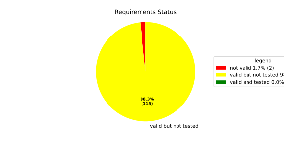
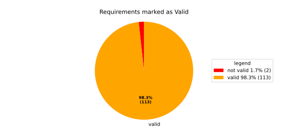
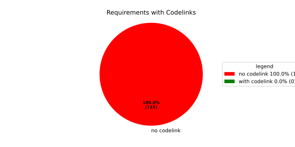

Component Requirements Statistics#
Overview#

In Detail#


No needs passed the filters
Failed Tests
Hint: This table should be empty. Before a PR can be merged all tests have to be successful.
No needs passed the filters
Skipped / Disabled Tests
No needs passed the filters
All passed Tests#
No needs passed the filters
Details About Testcases#
No needs passed the filters
No needs passed the filters
Test Log Files#
tests-report/src/launch_manager_daemon/health_monitor_lib/Notification_UT/test.log
exec ${PAGER:-/usr/bin/less} "$0" || exit 1
Executing tests from //src/launch_manager_daemon/health_monitor_lib:Notification_UT
-----------------------------------------------------------------------------
Running main() from gmock_main.cc
[==========] Running 5 tests from 2 test suites.
[----------] Global test environment set-up.
[----------] 4 tests from NotificationWithConfigTest
[ RUN ] NotificationWithConfigTest.CanGetNotificationName
mw::log initialization error: Error No logging configuration files could be found. occurred with context information: Failed to load configuration files. Fallback to console logging.
[ OK ] NotificationWithConfigTest.CanGetNotificationName (5 ms)
[ RUN ] NotificationWithConfigTest.SendsRequestAndNeverTimesOut
[ OK ] NotificationWithConfigTest.SendsRequestAndNeverTimesOut (0 ms)
[ RUN ] NotificationWithConfigTest.TimesOutWhenSendingRequestFails
2026/05/29 13:56:35.2995815 3726635 000 ECU1 NONE Rcvy log error verbose 2 Notification (TestNotification) Failed to enqueue recovery request (ring buffer full)
[ OK ] NotificationWithConfigTest.TimesOutWhenSendingRequestFails (3 ms)
[ RUN ] NotificationWithConfigTest.ProxyInitializationFails
2026/05/29 13:56:35.2995815 3726638 000 ECU1 NONE Rcvy log error verbose 3 Notification (TestNotification) Invalid ProcessGroupState identifier: InvalidIdentifier
[ OK ] NotificationWithConfigTest.ProxyInitializationFails (0 ms)
[----------] 4 tests from NotificationWithConfigTest (9 ms total)
[----------] 1 test from NotificationWithoutConfigTest
[ RUN ] NotificationWithoutConfigTest.WatchdogNotificationGoesDirectlyToTimeout
[ OK ] NotificationWithoutConfigTest.WatchdogNotificationGoesDirectlyToTimeout (0 ms)
[----------] 1 test from NotificationWithoutConfigTest (0 ms total)
[----------] Global test environment tear-down
[==========] 5 tests from 2 test suites ran. (10 ms total)
[ PASSED ] 5 tests.
tests-report/src/launch_manager_daemon/common/identifier_hash_UT/test.log
exec ${PAGER:-/usr/bin/less} "$0" || exit 1
Executing tests from //src/launch_manager_daemon/common:identifier_hash_UT
-----------------------------------------------------------------------------
Running main() from gmock_main.cc
[==========] Running 7 tests from 1 test suite.
[----------] Global test environment set-up.
[----------] 7 tests from IdentifierHashTest
[ RUN ] IdentifierHashTest.IdentifierHash_with_string_view_created
[ OK ] IdentifierHashTest.IdentifierHash_with_string_view_created (3 ms)
[ RUN ] IdentifierHashTest.IdentifierHash_with_string_created
[ OK ] IdentifierHashTest.IdentifierHash_with_string_created (0 ms)
[ RUN ] IdentifierHashTest.IdentifierHash_default_created
[ OK ] IdentifierHashTest.IdentifierHash_default_created (0 ms)
[ RUN ] IdentifierHashTest.IdentifierHash_invalid_hash_no_string_representation
[ OK ] IdentifierHashTest.IdentifierHash_invalid_hash_no_string_representation (0 ms)
[ RUN ] IdentifierHashTest.IdentifierHash_no_dangling_pointer_after_source_string_dies
[ OK ] IdentifierHashTest.IdentifierHash_no_dangling_pointer_after_source_string_dies (0 ms)
[ RUN ] IdentifierHashTest.IdentifierHash_EqualityOperators
[ OK ] IdentifierHashTest.IdentifierHash_EqualityOperators (0 ms)
[ RUN ] IdentifierHashTest.IdentifierHash_LessThanOperator
[ OK ] IdentifierHashTest.IdentifierHash_LessThanOperator (0 ms)
[----------] 7 tests from IdentifierHashTest (3 ms total)
[----------] Global test environment tear-down
[==========] 7 tests from 1 test suite ran. (3 ms total)
[ PASSED ] 7 tests.
tests-report/src/launch_manager_daemon/common/concurrency/mpmc_concurrent_queue_tsan_test/test.log
exec ${PAGER:-/usr/bin/less} "$0" || exit 1
Executing tests from //src/launch_manager_daemon/common/concurrency:mpmc_concurrent_queue_tsan_test
-----------------------------------------------------------------------------
Running main() from gmock_main.cc
[==========] Running 15 tests from 5 test suites.
[----------] Global test environment set-up.
[----------] 5 tests from MPMCConcurrentQueueTest_Basic
[ RUN ] MPMCConcurrentQueueTest_Basic.PushAndPopSingleItem
[ OK ] MPMCConcurrentQueueTest_Basic.PushAndPopSingleItem (0 ms)
[ RUN ] MPMCConcurrentQueueTest_Basic.PushAndPopPreservesOrder
[ OK ] MPMCConcurrentQueueTest_Basic.PushAndPopPreservesOrder (0 ms)
[ RUN ] MPMCConcurrentQueueTest_Basic.LvaluePushCopiesItem
[ OK ] MPMCConcurrentQueueTest_Basic.LvaluePushCopiesItem (0 ms)
[ RUN ] MPMCConcurrentQueueTest_Basic.RvaluePushWorksWithMoveOnlyType
[ OK ] MPMCConcurrentQueueTest_Basic.RvaluePushWorksWithMoveOnlyType (0 ms)
[ RUN ] MPMCConcurrentQueueTest_Basic.PopReturnsNulloptOnSemaphoreWaitFailure
[ OK ] MPMCConcurrentQueueTest_Basic.PopReturnsNulloptOnSemaphoreWaitFailure (20 ms)
[----------] 5 tests from MPMCConcurrentQueueTest_Basic (21 ms total)
[----------] 2 tests from MPMCConcurrentQueueTest_Timeout
[ RUN ] MPMCConcurrentQueueTest_Timeout.PushWithTimeoutSucceedsWhenSlotAvailable
[ OK ] MPMCConcurrentQueueTest_Timeout.PushWithTimeoutSucceedsWhenSlotAvailable (0 ms)
[ RUN ] MPMCConcurrentQueueTest_Timeout.PushWithTimeoutReturnsFalseWhenFull
[ OK ] MPMCConcurrentQueueTest_Timeout.PushWithTimeoutReturnsFalseWhenFull (21 ms)
[----------] 2 tests from MPMCConcurrentQueueTest_Timeout (21 ms total)
[----------] 3 tests from MPMCConcurrentQueueTest_Stop
[ RUN ] MPMCConcurrentQueueTest_Stop.PushReturnsFalseAfterStop
[ OK ] MPMCConcurrentQueueTest_Stop.PushReturnsFalseAfterStop (0 ms)
[ RUN ] MPMCConcurrentQueueTest_Stop.PopReturnsNulloptWhenStoppedAndEmpty
[ OK ] MPMCConcurrentQueueTest_Stop.PopReturnsNulloptWhenStoppedAndEmpty (0 ms)
[ RUN ] MPMCConcurrentQueueTest_Stop.ItemsAreDroppedAfterStop
[ OK ] MPMCConcurrentQueueTest_Stop.ItemsAreDroppedAfterStop (0 ms)
[----------] 3 tests from MPMCConcurrentQueueTest_Stop (0 ms total)
[----------] 4 tests from MPMCConcurrentQueueTest_Blocking
[ RUN ] MPMCConcurrentQueueTest_Blocking.PopBlocksUntilItemAvailable
[ OK ] MPMCConcurrentQueueTest_Blocking.PopBlocksUntilItemAvailable (0 ms)
[ RUN ] MPMCConcurrentQueueTest_Blocking.PushBlocksWhenFull
[ OK ] MPMCConcurrentQueueTest_Blocking.PushBlocksWhenFull (0 ms)
[ RUN ] MPMCConcurrentQueueTest_Blocking.StopUnblocksBlockedConsumer
[ OK ] MPMCConcurrentQueueTest_Blocking.StopUnblocksBlockedConsumer (0 ms)
[ RUN ] MPMCConcurrentQueueTest_Blocking.StopUnblocksBlockedProducer
[ OK ] MPMCConcurrentQueueTest_Blocking.StopUnblocksBlockedProducer (0 ms)
[----------] 4 tests from MPMCConcurrentQueueTest_Blocking (1 ms total)
[----------] 1 test from MPMCConcurrentQueueTest_MPMC
[ RUN ] MPMCConcurrentQueueTest_MPMC.AllItemsDelivered
[ OK ] MPMCConcurrentQueueTest_MPMC.AllItemsDelivered (4 ms)
[----------] 1 test from MPMCConcurrentQueueTest_MPMC (4 ms total)
[----------] Global test environment tear-down
[==========] 15 tests from 5 test suites ran. (49 ms total)
[ PASSED ] 15 tests.
tests-report/src/launch_manager_daemon/common/concurrency/mpmc_concurrent_queue_test/test.log
exec ${PAGER:-/usr/bin/less} "$0" || exit 1
Executing tests from //src/launch_manager_daemon/common/concurrency:mpmc_concurrent_queue_test
-----------------------------------------------------------------------------
Running main() from gmock_main.cc
[==========] Running 15 tests from 5 test suites.
[----------] Global test environment set-up.
[----------] 5 tests from MPMCConcurrentQueueTest_Basic
[ RUN ] MPMCConcurrentQueueTest_Basic.PushAndPopSingleItem
[ OK ] MPMCConcurrentQueueTest_Basic.PushAndPopSingleItem (3 ms)
[ RUN ] MPMCConcurrentQueueTest_Basic.PushAndPopPreservesOrder
[ OK ] MPMCConcurrentQueueTest_Basic.PushAndPopPreservesOrder (0 ms)
[ RUN ] MPMCConcurrentQueueTest_Basic.LvaluePushCopiesItem
[ OK ] MPMCConcurrentQueueTest_Basic.LvaluePushCopiesItem (0 ms)
[ RUN ] MPMCConcurrentQueueTest_Basic.RvaluePushWorksWithMoveOnlyType
[ OK ] MPMCConcurrentQueueTest_Basic.RvaluePushWorksWithMoveOnlyType (0 ms)
[ RUN ] MPMCConcurrentQueueTest_Basic.PopReturnsNulloptOnSemaphoreWaitFailure
[ OK ] MPMCConcurrentQueueTest_Basic.PopReturnsNulloptOnSemaphoreWaitFailure (22 ms)
[----------] 5 tests from MPMCConcurrentQueueTest_Basic (26 ms total)
[----------] 2 tests from MPMCConcurrentQueueTest_Timeout
[ RUN ] MPMCConcurrentQueueTest_Timeout.PushWithTimeoutSucceedsWhenSlotAvailable
[ OK ] MPMCConcurrentQueueTest_Timeout.PushWithTimeoutSucceedsWhenSlotAvailable (0 ms)
[ RUN ] MPMCConcurrentQueueTest_Timeout.PushWithTimeoutReturnsFalseWhenFull
[ OK ] MPMCConcurrentQueueTest_Timeout.PushWithTimeoutReturnsFalseWhenFull (20 ms)
[----------] 2 tests from MPMCConcurrentQueueTest_Timeout (21 ms total)
[----------] 3 tests from MPMCConcurrentQueueTest_Stop
[ RUN ] MPMCConcurrentQueueTest_Stop.PushReturnsFalseAfterStop
[ OK ] MPMCConcurrentQueueTest_Stop.PushReturnsFalseAfterStop (0 ms)
[ RUN ] MPMCConcurrentQueueTest_Stop.PopReturnsNulloptWhenStoppedAndEmpty
[ OK ] MPMCConcurrentQueueTest_Stop.PopReturnsNulloptWhenStoppedAndEmpty (0 ms)
[ RUN ] MPMCConcurrentQueueTest_Stop.ItemsAreDroppedAfterStop
[ OK ] MPMCConcurrentQueueTest_Stop.ItemsAreDroppedAfterStop (0 ms)
[----------] 3 tests from MPMCConcurrentQueueTest_Stop (0 ms total)
[----------] 4 tests from MPMCConcurrentQueueTest_Blocking
[ RUN ] MPMCConcurrentQueueTest_Blocking.PopBlocksUntilItemAvailable
[ OK ] MPMCConcurrentQueueTest_Blocking.PopBlocksUntilItemAvailable (0 ms)
[ RUN ] MPMCConcurrentQueueTest_Blocking.PushBlocksWhenFull
[ OK ] MPMCConcurrentQueueTest_Blocking.PushBlocksWhenFull (0 ms)
[ RUN ] MPMCConcurrentQueueTest_Blocking.StopUnblocksBlockedConsumer
[ OK ] MPMCConcurrentQueueTest_Blocking.StopUnblocksBlockedConsumer (0 ms)
[ RUN ] MPMCConcurrentQueueTest_Blocking.StopUnblocksBlockedProducer
[ OK ] MPMCConcurrentQueueTest_Blocking.StopUnblocksBlockedProducer (0 ms)
[----------] 4 tests from MPMCConcurrentQueueTest_Blocking (0 ms total)
[----------] 1 test from MPMCConcurrentQueueTest_MPMC
[ RUN ] MPMCConcurrentQueueTest_MPMC.AllItemsDelivered
[ OK ] MPMCConcurrentQueueTest_MPMC.AllItemsDelivered (3 ms)
[----------] 1 test from MPMCConcurrentQueueTest_MPMC (3 ms total)
[----------] Global test environment tear-down
[==========] 15 tests from 5 test suites ran. (51 ms total)
[ PASSED ] 15 tests.
tests-report/src/launch_manager_daemon/process_state_client_lib/processstateclient_UT/test.log
exec ${PAGER:-/usr/bin/less} "$0" || exit 1
Executing tests from //src/launch_manager_daemon/process_state_client_lib:processstateclient_UT
-----------------------------------------------------------------------------
Running main() from gmock_main.cc
[==========] Running 4 tests from 1 test suite.
[----------] Global test environment set-up.
[----------] 4 tests from ProcessStateClient_UT
[ RUN ] ProcessStateClient_UT.ProcessStateClient_ConstructReceiver_Succeeds
[ OK ] ProcessStateClient_UT.ProcessStateClient_ConstructReceiver_Succeeds (0 ms)
[ RUN ] ProcessStateClient_UT.ProcessStateClient_QueueOneProcess_Succeeds
[ OK ] ProcessStateClient_UT.ProcessStateClient_QueueOneProcess_Succeeds (0 ms)
[ RUN ] ProcessStateClient_UT.ProcessStateClient_QueueMaxNumberOfProcesses_Succeeds
[ OK ] ProcessStateClient_UT.ProcessStateClient_QueueMaxNumberOfProcesses_Succeeds (12 ms)
[ RUN ] ProcessStateClient_UT.ProcessStateClient_QueueOneProcessTooMany_Fails
mw::log initialization error: Error No logging configuration files could be found. occurred with context information: Failed to load configuration files. Fallback to console logging.
2026/05/29 13:56:54.3014656 3915048 000 ECU1 NONE LM log error verbose 1 Failed to queue posix process
2026/05/29 13:56:54.3014657 3915050 000 ECU1 NONE LM log error verbose 1 ProcessStateReceiver::getNextChangedPosixProcess: Overflow occurred, will be reported as kCommunicationError
[ OK ] ProcessStateClient_UT.ProcessStateClient_QueueOneProcessTooMany_Fails (6 ms)
[----------] 4 tests from ProcessStateClient_UT (20 ms total)
[----------] Global test environment tear-down
[==========] 4 tests from 1 test suite ran. (20 ms total)
[ PASSED ] 4 tests.
tests-report/src/launch_manager_daemon/recovery_client_lib/recovery_client_UT/test.log
exec ${PAGER:-/usr/bin/less} "$0" || exit 1
Executing tests from //src/launch_manager_daemon/recovery_client_lib:recovery_client_UT
-----------------------------------------------------------------------------
Running main() from gmock_main.cc
[==========] Running 5 tests from 1 test suite.
[----------] Global test environment set-up.
[----------] 5 tests from RecoveryClientTest
[ RUN ] RecoveryClientTest.SendSingleRequest
[ OK ] RecoveryClientTest.SendSingleRequest (0 ms)
[ RUN ] RecoveryClientTest.GetNextRequest
[ OK ] RecoveryClientTest.GetNextRequest (3 ms)
[ RUN ] RecoveryClientTest.GetNextRequestEmpty
[ OK ] RecoveryClientTest.GetNextRequestEmpty (0 ms)
[ RUN ] RecoveryClientTest.RingBufferFull
[ OK ] RecoveryClientTest.RingBufferFull (0 ms)
[ RUN ] RecoveryClientTest.FIFOOrdering
[ OK ] RecoveryClientTest.FIFOOrdering (0 ms)
[----------] 5 tests from RecoveryClientTest (3 ms total)
[----------] Global test environment tear-down
[==========] 5 tests from 1 test suite ran. (3 ms total)
[ PASSED ] 5 tests.
tests-report/src/health_monitoring_lib/tests/test.log
exec ${PAGER:-/usr/bin/less} "$0" || exit 1
Executing tests from //src/health_monitoring_lib:tests
-----------------------------------------------------------------------------
running 232 tests
test common::tests::duration_to_int_too_large - should panic ... ok
test common::tests::time_offset_diff_too_large - should panic ... ok
test common::tests::time_offset_valid ... ok
test common::tests::duration_to_int_valid ... ok
test common::tests::time_range_from_interval_valid ... ok
test common::tests::time_range_new_valid ... ok
test common::tests::time_range_new_wrong_order - should panic ... ok
test deadline::common::tests::acquire_and_release_deadline ... ok
test deadline::common::tests::new_and_fields ... ok
test deadline::deadline_monitor::tests::deadline_failed_on_first_run_and_then_restarted_is_evaluated_as_error ... ok
test deadline::deadline_monitor::tests::deadline_outside_time_range_is_error_when_dropped_after_evaluate ... ok
test deadline::deadline_monitor::tests::get_deadline_unknown_tag ... ok
test deadline::common::tests::concurrent_acquire ... ok
test deadline::deadline_monitor::tests::start_stop_deadline_outside_ranges_is_error_when_dropped_before_evaluate ... ok
test deadline::deadline_monitor::tests::start_stop_deadline_outside_ranges_is_evaluated_as_error ... ok
test common::tests::time_offset_wrong_order ... ok
test common::tests::time_range_from_interval_lower_too_large - should panic ... ok
test deadline::deadline_state::tests::as_u64_and_new ... ok
test deadline::deadline_state::tests::deadline_state_default_and_snapshot ... ok
test deadline::deadline_state::tests::deadline_state_update_none_returns_err ... ok
test deadline::deadline_state::tests::deadline_state_update_success ... ok
test deadline::deadline_state::tests::default_state ... ok
test deadline::deadline_state::tests::set_and_get_timestamp_ms ... ok
test deadline::deadline_state::tests::set_running ... ok
test deadline::deadline_state::tests::set_underrun ... ok
test deadline::ffi::tests::deadline_monitor_builder_add_deadline_invalid_range ... ok
test deadline::ffi::tests::deadline_monitor_builder_add_deadline_null_builder ... ok
test deadline::ffi::tests::deadline_destroy_null_deadline ... ok
test deadline::ffi::tests::deadline_monitor_builder_add_deadline_null_deadline_tag ... ok
test deadline::ffi::tests::deadline_monitor_builder_add_deadline_succeeds ... ok
test deadline::ffi::tests::deadline_monitor_builder_create_null_builder ... ok
test deadline::ffi::tests::deadline_monitor_builder_destroy_null_builder ... ok
test deadline::ffi::tests::deadline_monitor_builder_create_succeeds ... ok
test deadline::ffi::tests::deadline_monitor_destroy_null_monitor ... ok
test deadline::ffi::tests::deadline_monitor_get_deadline_null_deadline_handle ... ok
test deadline::ffi::tests::deadline_monitor_get_deadline_null_deadline_tag ... ok
test deadline::ffi::tests::deadline_monitor_get_deadline_null_monitor ... ok
test deadline::ffi::tests::deadline_monitor_get_deadline_succeeds ... ok
test deadline::ffi::tests::deadline_monitor_get_deadline_unknown_deadline ... ok
test deadline::ffi::tests::deadline_start_already_started ... ok
test deadline::ffi::tests::deadline_start_null_deadline ... ok
test deadline::ffi::tests::deadline_start_succeeds ... ok
test deadline::ffi::tests::deadline_stop_null_deadline ... ok
test ffi::tests::health_monitor_builder_add_deadline_monitor_null_deadline_monitor_builder ... ok
test ffi::tests::health_monitor_builder_add_deadline_monitor_null_hmon_builder ... ok
test deadline::ffi::tests::deadline_stop_succeeds ... ok
test ffi::tests::health_monitor_builder_add_deadline_monitor_null_monitor_tag ... ok
test ffi::tests::health_monitor_builder_add_deadline_monitor_succeeds ... ok
test ffi::tests::health_monitor_builder_add_heartbeat_monitor_null_heartbeat_monitor_builder ... ok
test ffi::tests::health_monitor_builder_add_heartbeat_monitor_null_hmon_builder ... ok
test ffi::tests::health_monitor_builder_add_heartbeat_monitor_null_monitor_tag ... ok
test ffi::tests::health_monitor_builder_add_heartbeat_monitor_succeeds ... ok
test ffi::tests::health_monitor_builder_add_logic_monitor_null_hmon_builder ... ok
test ffi::tests::health_monitor_builder_add_logic_monitor_null_logic_monitor_builder ... ok
test ffi::tests::health_monitor_builder_add_logic_monitor_null_monitor_tag ... ok
test ffi::tests::health_monitor_builder_add_logic_monitor_succeeds ... ok
test ffi::tests::health_monitor_builder_build_invalid_cycle_intervals ... ok
test ffi::tests::health_monitor_builder_build_no_monitors ... ok
test ffi::tests::health_monitor_builder_build_null_builder_handle ... ok
test ffi::tests::health_monitor_builder_build_null_monitor_handle ... ok
test ffi::tests::health_monitor_builder_build_succeeds ... ok
test ffi::tests::health_monitor_builder_build_thread_parameters ... ok
test ffi::tests::health_monitor_builder_build_valid_cycle_intervals_succeeds ... ok
test ffi::tests::health_monitor_builder_create_null_handle ... ok
test ffi::tests::health_monitor_builder_create_succeeds ... ok
test ffi::tests::health_monitor_builder_destroy_null_handle ... ok
test ffi::tests::health_monitor_destroy_null_hmon ... ok
test ffi::tests::health_monitor_get_deadline_monitor_already_taken ... ok
test ffi::tests::health_monitor_get_deadline_monitor_null_deadline_monitor ... ok
test ffi::tests::health_monitor_get_deadline_monitor_null_hmon ... ok
test ffi::tests::health_monitor_get_deadline_monitor_null_monitor_tag ... ok
test ffi::tests::health_monitor_get_deadline_monitor_succeeds ... ok
test ffi::tests::health_monitor_get_heartbeat_monitor_already_taken ... ok
test ffi::tests::health_monitor_get_heartbeat_monitor_null_heartbeat_monitor ... ok
test ffi::tests::health_monitor_get_heartbeat_monitor_null_hmon ... ok
test ffi::tests::health_monitor_get_heartbeat_monitor_null_monitor_tag ... ok
test ffi::tests::health_monitor_get_logic_monitor_already_taken ... ok
test ffi::tests::health_monitor_get_logic_monitor_null_hmon ... ok
test ffi::tests::health_monitor_get_logic_monitor_null_logic_monitor ... ok
test ffi::tests::health_monitor_get_logic_monitor_null_monitor_tag ... ok
test ffi::tests::health_monitor_get_logic_monitor_succeeds ... ok
test ffi::tests::health_monitor_start_monitor_not_taken ... ok
test ffi::tests::health_monitor_start_null_hmon ... ok
[2026/05/29 13:58:08.9896951][13943][HMON][INFO] Monitoring thread started.
[2026/05/29 13:58:08.9897079][13943][HMON][INFO] Monitoring thread exiting.
test ffi::tests::health_monitor_start_succeeds ... ok
test health_monitor::tests::health_monitor_builder_build_invalid_cycles ... ok
test health_monitor::tests::health_monitor_builder_build_no_monitors ... ok
test ffi::tests::health_monitor_get_heartbeat_monitor_succeeds ... ok
test health_monitor::tests::health_monitor_builder_build_succeeds ... ok
test health_monitor::tests::health_monitor_builder_new_succeeds ... ok
test health_monitor::tests::health_monitor_get_deadline_monitor_available ... ok
test health_monitor::tests::health_monitor_get_deadline_monitor_invalid_state ... ok
test health_monitor::tests::health_monitor_get_deadline_monitor_taken ... ok
test health_monitor::tests::health_monitor_get_deadline_monitor_unknown ... ok
test health_monitor::tests::health_monitor_get_heartbeat_monitor_available ... ok
test health_monitor::tests::health_monitor_get_heartbeat_monitor_invalid_state ... ok
test health_monitor::tests::health_monitor_get_heartbeat_monitor_taken ... ok
test health_monitor::tests::health_monitor_get_heartbeat_monitor_unknown ... ok
test health_monitor::tests::health_monitor_get_logic_monitor_available ... ok
test health_monitor::tests::health_monitor_get_logic_monitor_invalid_state ... ok
test health_monitor::tests::health_monitor_get_logic_monitor_taken ... ok
test health_monitor::tests::health_monitor_get_logic_monitor_unknown ... ok
test health_monitor::tests::health_monitor_start_monitors_not_taken - should panic ... ok
test heartbeat::ffi::tests::heartbeat_monitor_builder_create_invalid_range ... ok
[2026/05/29 13:58:08.9989089][13943][HMON][INFO] Monitoring thread started.
[2026/05/29 13:58:08.9989207][13943][HMON][INFO] Monitoring thread exiting.
test heartbeat::ffi::tests::heartbeat_monitor_builder_create_null_builder ... ok
test health_monitor::tests::health_monitor_start_succeeds ... ok
test heartbeat::ffi::tests::heartbeat_monitor_builder_create_succeeds ... ok
test heartbeat::ffi::tests::heartbeat_monitor_builder_destroy_null_builder ... ok
test heartbeat::ffi::tests::heartbeat_monitor_destroy_null_monitor ... ok
test heartbeat::ffi::tests::heartbeat_monitor_heartbeat_null_monitor ... ok
test heartbeat::ffi::tests::heartbeat_monitor_heartbeat_succeeds ... ok
test deadline::deadline_monitor::tests::monitor_with_multiple_running_deadlines ... ok
test heartbeat::heartbeat_monitor::tests::heartbeat_monitor_beat_early_evaluate_early ... ok
test heartbeat::heartbeat_monitor::tests::heartbeat_monitor_beat_early_evaluate_in_range ... ok
test heartbeat::heartbeat_monitor::tests::heartbeat_monitor_beat_in_range_evaluate_in_range ... ok
test heartbeat::heartbeat_monitor::tests::heartbeat_monitor_beat_early_evaluate_late ... ok
test heartbeat::heartbeat_monitor::tests::heartbeat_monitor_builder_build_invalid_internal_processing_cycle ... ok
test heartbeat::heartbeat_monitor::tests::heartbeat_monitor_builder_build_ok ... ok
test heartbeat::heartbeat_monitor::tests::heartbeat_monitor_beat_in_range_evaluate_late ... ok
test heartbeat::heartbeat_monitor::tests::heartbeat_monitor_beat_late_evaluate_late ... ok
test heartbeat::heartbeat_monitor::tests::heartbeat_monitor_cycle_early ... ok
test heartbeat::heartbeat_monitor::tests::heartbeat_monitor_multiple_beats_early_evaluate_early ... ok
test heartbeat::heartbeat_monitor::tests::heartbeat_monitor_cycle_in_range ... ok
test heartbeat::heartbeat_monitor::tests::heartbeat_monitor_multiple_beats_early_evaluate_in_range ... ok
test heartbeat::heartbeat_monitor::tests::heartbeat_monitor_multiple_beats_in_range_evaluate_in_range ... ok
test heartbeat::heartbeat_monitor::tests::heartbeat_monitor_cycle_late ... ok
test heartbeat::heartbeat_monitor::tests::heartbeat_monitor_multiple_beats_early_evaluate_late ... ok
test heartbeat::heartbeat_monitor::tests::heartbeat_monitor_no_beat_evaluate_early ... ok
test heartbeat::heartbeat_monitor::tests::heartbeat_monitor_no_beat_evaluate_in_range ... ok
test heartbeat::heartbeat_monitor::tests::heartbeat_monitor_multiple_beats_in_range_evaluate_late ... ok
test heartbeat::heartbeat_monitor::tests::heartbeat_monitor_multiple_beats_late_evaluate_late ... ok
test heartbeat::heartbeat_state::tests::snapshot_counter_increment ... ok
test heartbeat::heartbeat_state::tests::snapshot_default ... ok
test heartbeat::heartbeat_state::tests::snapshot_from_u64_max ... ok
test heartbeat::heartbeat_state::tests::snapshot_from_u64_valid ... ok
test heartbeat::heartbeat_state::tests::snapshot_from_u64_zero ... ok
test heartbeat::heartbeat_state::tests::snapshot_new_succeeds ... ok
test heartbeat::heartbeat_state::tests::snapshot_set_heartbeat_timestamp_out_of_range - should panic ... ok
test heartbeat::heartbeat_state::tests::snapshot_set_heartbeat_timestamp_valid ... ok
test heartbeat::heartbeat_state::tests::state_default ... ok
test heartbeat::heartbeat_state::tests::state_new ... ok
test heartbeat::heartbeat_state::tests::state_reset ... ok
test heartbeat::heartbeat_state::tests::state_snapshot ... ok
test heartbeat::heartbeat_state::tests::state_update_none ... ok
test heartbeat::heartbeat_state::tests::state_update_some ... ok
test logic::ffi::tests::logic_monitor_builder_add_state_null_allowed_states_many_elements ... ok
test logic::ffi::tests::logic_monitor_builder_add_state_null_allowed_states_zero_elements ... ok
test logic::ffi::tests::logic_monitor_builder_add_state_null_builder ... ok
test logic::ffi::tests::logic_monitor_builder_add_state_null_tag ... ok
test logic::ffi::tests::logic_monitor_builder_add_state_succeeds ... ok
test logic::ffi::tests::logic_monitor_builder_create_null_builder ... ok
test logic::ffi::tests::logic_monitor_builder_create_null_initial_state ... ok
test logic::ffi::tests::logic_monitor_builder_create_succeeds ... ok
test logic::ffi::tests::logic_monitor_builder_destroy_null_builder ... ok
test logic::ffi::tests::logic_monitor_destroy_null_monitor ... ok
test logic::ffi::tests::logic_monitor_state_fails ... ok
test logic::ffi::tests::logic_monitor_state_null_monitor ... ok
test logic::ffi::tests::logic_monitor_state_null_state ... ok
test logic::ffi::tests::logic_monitor_state_succeeds ... ok
test logic::ffi::tests::logic_monitor_transition_fails ... ok
test logic::ffi::tests::logic_monitor_transition_null_monitor ... ok
test logic::ffi::tests::logic_monitor_transition_null_target_state ... ok
test logic::ffi::tests::logic_monitor_transition_succeeds ... ok
test logic::logic_monitor::tests::logic_monitor_builder_build_no_states ... ok
test logic::logic_monitor::tests::logic_monitor_builder_build_succeeds ... ok
test logic::logic_monitor::tests::logic_monitor_builder_build_undefined_initial_state ... ok
test logic::logic_monitor::tests::logic_monitor_builder_build_undefined_target ... ok
test logic::logic_monitor::tests::logic_monitor_builder_new_succeeds ... ok
test logic::logic_monitor::tests::logic_monitor_evaluate_invalid_state ... ok
test logic::logic_monitor::tests::logic_monitor_evaluate_invalid_transition ... ok
test logic::logic_monitor::tests::logic_monitor_evaluate_succeeds ... ok
test logic::logic_monitor::tests::logic_monitor_state_indeterminate_current_state ... ok
test logic::logic_monitor::tests::logic_monitor_state_succeeds ... ok
test logic::logic_monitor::tests::logic_monitor_transition_indeterminate_current_state ... ok
test logic::logic_monitor::tests::logic_monitor_transition_invalid_transition ... ok
test logic::logic_monitor::tests::logic_monitor_transition_succeeds ... ok
test logic::logic_monitor::tests::logic_monitor_transition_unknown_node ... ok
test logic::logic_state::tests::snapshot_from_u64_max ... ok
test logic::logic_state::tests::snapshot_from_u64_valid ... ok
test logic::logic_state::tests::snapshot_from_u64_zero ... ok
test logic::logic_state::tests::snapshot_new_succeeds ... ok
test logic::logic_state::tests::snapshot_set_current_state_index_valid ... ok
test logic::logic_state::tests::snapshot_set_heartbeat_timestamp_out_of_range - should panic ... ok
test logic::logic_state::tests::snapshot_set_monitor_status_valid ... ok
test logic::logic_state::tests::state_new ... ok
test logic::logic_state::tests::state_snapshot ... ok
test logic::logic_state::tests::state_swap ... ok
test tag::tests::deadline_tag_debug ... ok
test tag::tests::deadline_tag_from_str ... ok
test tag::tests::deadline_tag_from_string ... ok
test tag::tests::deadline_tag_new ... ok
test tag::tests::deadline_tag_score_debug ... ok
test tag::tests::monitor_tag_debug ... ok
test tag::tests::monitor_tag_from_str ... ok
test tag::tests::monitor_tag_from_string ... ok
test tag::tests::monitor_tag_new ... ok
test tag::tests::monitor_tag_score_debug ... ok
test tag::tests::state_tag_debug ... ok
test tag::tests::state_tag_from_str ... ok
test tag::tests::state_tag_from_string ... ok
test tag::tests::state_tag_new ... ok
test tag::tests::state_tag_score_debug ... ok
test tag::tests::tag_debug ... ok
test tag::tests::tag_hash_is_eq ... ok
test tag::tests::tag_hash_is_ne ... ok
test tag::tests::tag_new ... ok
test tag::tests::tag_partial_eq_is_eq ... ok
test tag::tests::tag_partial_eq_is_ne ... ok
test tag::tests::tag_score_debug ... ok
test tag::tests::test_from_str ... ok
test tag::tests::test_from_string ... ok
test thread_ffi::tests::scheduler_policy_priority_max_null_priority ... ok
test thread_ffi::tests::scheduler_policy_priority_max_succeeds ... ok
test thread_ffi::tests::scheduler_policy_priority_min_null_priority ... ok
test thread_ffi::tests::scheduler_policy_priority_min_succeeds ... ok
test thread_ffi::tests::thread_parameters_affinity_null_affinity_many_elements ... ok
test thread_ffi::tests::thread_parameters_affinity_null_affinity_zero_elements ... ok
test thread_ffi::tests::thread_parameters_affinity_null_handle ... ok
test thread_ffi::tests::thread_parameters_affinity_succeeds ... ok
test thread_ffi::tests::thread_parameters_create_succeeds ... ok
test thread_ffi::tests::thread_parameters_destroy_null_handle ... ok
test thread_ffi::tests::thread_parameters_scheduler_parameters_invalid_priority ... ok
test thread_ffi::tests::thread_parameters_scheduler_parameters_null_handle ... ok
test thread_ffi::tests::thread_parameters_scheduler_parameters_succeeds ... ok
test thread_ffi::tests::thread_parameters_stack_size_null_handle ... ok
test thread_ffi::tests::thread_parameters_stack_size_succeeds ... ok
test worker::tests::monitoring_logic_report_alive_on_each_call_when_no_error ... ok
test heartbeat::heartbeat_monitor::tests::heartbeat_monitor_no_beat_evaluate_late ... ok
test worker::tests::monitoring_logic_report_error_when_deadline_failed ... ok
[2026/05/29 13:58:09.9534405][13943][HMON][INFO] Monitoring thread started.
test deadline::deadline_monitor::tests::start_stop_deadline_within_range_works ... ok
[2026/05/29 13:58:10.0140065][13943][HMON][WARN] Deadline (DeadlineTag(deadline_fast)) missed! Expected: 50, now: 60
[2026/05/29 13:58:10.0140380][13943][HMON][WARN] Deadline monitor with tag MonitorTag(deadline_monitor) reported error: TooLate.
[2026/05/29 13:58:10.0140480][13943][HMON][WARN] One or more monitors reported errors, skipping AliveAPI notification.
[2026/05/29 13:58:10.0140554][13943][HMON][INFO] Monitoring logic failed, stopping thread.
[2026/05/29 13:58:10.0140620][13943][HMON][INFO] Monitoring thread exiting.
test worker::tests::monitoring_logic_report_alive_respect_cycle ... ok
test worker::tests::unique_thread_runner_monitoring_works ... ok
test heartbeat::heartbeat_monitor::tests::heartbeat_monitor_timestamp_offset ... ok
test result: ok. 232 passed; 0 failed; 0 ignored; 0 measured; 0 filtered out; finished in 1.27s
tests-report/src/health_monitoring_lib/cpp_tests/test.log
exec ${PAGER:-/usr/bin/less} "$0" || exit 1
Executing tests from //src/health_monitoring_lib:cpp_tests
-----------------------------------------------------------------------------
Running main() from gmock_main.cc
[==========] Running 1 test from 1 test suite.
[----------] Global test environment set-up.
[----------] 1 test from HealthMonitorTest
[ RUN ] HealthMonitorTest.TestName
[2026/05/29 13:58:08.5337918][src/health_monitoring_lib/rust/deadline/deadline_monitor.rs:217][13896][HMON][ERROR] Deadline DeadlineTag(deadline_1) stopped too early by 100 ms
[2026/05/29 13:58:08.5353685][src/health_monitoring_lib/rust/worker.rs:121][13896][HMON][INFO] Monitoring thread started.
[2026/05/29 13:58:08.5353893][src/health_monitoring_lib/rust/worker.rs:139][13896][HMON][INFO] Monitoring thread exiting.
[ OK ] HealthMonitorTest.TestName (2 ms)
[----------] 1 test from HealthMonitorTest (2 ms total)
[----------] Global test environment tear-down
[==========] 1 test from 1 test suite ran. (2 ms total)
[ PASSED ] 1 test.
tests-report/src/health_monitoring_lib/loom_tests/test.log
exec ${PAGER:-/usr/bin/less} "$0" || exit 1
Executing tests from //src/health_monitoring_lib:loom_tests
-----------------------------------------------------------------------------
running 3 tests
test heartbeat::heartbeat_monitor::loom_tests::heartbeat_monitor_heartbeat_evaluate_too_early ... ok
test heartbeat::heartbeat_monitor::loom_tests::heartbeat_monitor_heartbeat_evaluate_in_range ... ok
test heartbeat::heartbeat_monitor::loom_tests::heartbeat_monitor_heartbeat_evaluate_too_late ... ok
test result: ok. 3 passed; 0 failed; 0 ignored; 0 measured; 0 filtered out; finished in 0.70s
tests-report/tests/integration/smoke/smoke/test.log
exec ${PAGER:-/usr/bin/less} "$0" || exit 1
Executing tests from //tests/integration/smoke:smoke
-----------------------------------------------------------------------------
============================= test session starts ==============================
platform linux -- Python 3.12.12, pytest-9.0.3, pluggy-1.5.0
rootdir: /home/runner/.bazel/sandbox/processwrapper-sandbox/837/execroot/_main/bazel-out/k8-fastbuild/bin/tests/integration/smoke/smoke.runfiles/score_itf+
configfile: pytest.ini
collected 1 item
../score_itf+::test_smoke
-------------------------------- live log setup --------------------------------
[2026-05-29 13:57:45.580] [INFO] [score.itf.plugins.docker] Executing custom image bootstrap command: tests/utils/environments/x86_64-linux/x86_64-linux.sh
[2026-05-29 13:57:46.142] [DEBUG] [docker.utils.config] Trying paths: ['/home/runner/.docker/config.json', '/home/runner/.dockercfg']
[2026-05-29 13:57:46.142] [DEBUG] [docker.utils.config] Found file at path: /home/runner/.docker/config.json
[2026-05-29 13:57:46.142] [DEBUG] [docker.auth] Found 'auths' section
[2026-05-29 13:57:46.142] [DEBUG] [docker.auth] Found entry (registry='https://index.docker.io/v1/', username='githubactions')
[2026-05-29 13:57:46.219] [DEBUG] [urllib3.connectionpool] http://localhost:None "GET /version HTTP/1.1" 200 823
[2026-05-29 13:57:46.281] [DEBUG] [urllib3.connectionpool] http://localhost:None "POST /v1.48/containers/create HTTP/1.1" 201 88
[2026-05-29 13:57:46.283] [DEBUG] [urllib3.connectionpool] http://localhost:None "GET /v1.48/containers/69867a9d49aa51d0e5125d9f491b931a7dca31159707cb1875d746be2aa5a956/json HTTP/1.1" 200 None
[2026-05-29 13:57:46.463] [DEBUG] [urllib3.connectionpool] http://localhost:None "POST /v1.48/containers/69867a9d49aa51d0e5125d9f491b931a7dca31159707cb1875d746be2aa5a956/start HTTP/1.1" 204 0
[2026-05-29 13:57:46.484] [DEBUG] [docker.utils.config] Trying paths: ['/home/runner/.docker/config.json', '/home/runner/.dockercfg']
[2026-05-29 13:57:46.506] [DEBUG] [docker.utils.config] Found file at path: /home/runner/.docker/config.json
[2026-05-29 13:57:46.506] [DEBUG] [docker.auth] Found 'auths' section
[2026-05-29 13:57:46.506] [DEBUG] [docker.auth] Found entry (registry='https://index.docker.io/v1/', username='githubactions')
[2026-05-29 13:57:46.543] [DEBUG] [urllib3.connectionpool] http://localhost:None "GET /version HTTP/1.1" 200 823
[2026-05-29 13:57:46.552] [DEBUG] [urllib3.connectionpool] http://localhost:None "POST /v1.48/containers/69867a9d49aa51d0e5125d9f491b931a7dca31159707cb1875d746be2aa5a956/exec HTTP/1.1" 201 74
[2026-05-29 13:57:46.559] [DEBUG] [urllib3.connectionpool] http://localhost:None "POST /v1.48/exec/4c230f7e8a573204757a27c562bfc4ae590888823ae5828b06a2db3ad1f9e774/start HTTP/1.1" 101 0
[2026-05-29 13:57:46.629] [DEBUG] [urllib3.connectionpool] http://localhost:None "GET /v1.48/exec/4c230f7e8a573204757a27c562bfc4ae590888823ae5828b06a2db3ad1f9e774/json HTTP/1.1" 200 391
[2026-05-29 13:57:46.790] [DEBUG] [urllib3.connectionpool] http://localhost:None "PUT /v1.48/containers/69867a9d49aa51d0e5125d9f491b931a7dca31159707cb1875d746be2aa5a956/archive?path=%2Ftmp HTTP/1.1" 200 0
[2026-05-29 13:57:46.802] [DEBUG] [urllib3.connectionpool] http://localhost:None "POST /v1.48/containers/69867a9d49aa51d0e5125d9f491b931a7dca31159707cb1875d746be2aa5a956/exec HTTP/1.1" 201 74
[2026-05-29 13:57:46.806] [DEBUG] [urllib3.connectionpool] http://localhost:None "POST /v1.48/exec/0fb3a64728b9f0fd267d5b46996cb5c946f8b2ccb958150951f890907a409e56/start HTTP/1.1" 101 0
[2026-05-29 13:57:46.911] [DEBUG] [urllib3.connectionpool] http://localhost:None "GET /v1.48/exec/0fb3a64728b9f0fd267d5b46996cb5c946f8b2ccb958150951f890907a409e56/json HTTP/1.1" 200 417
[2026-05-29 13:57:46.911] [INFO] [tests.utils.testing_utils.setup_test] Test case setup finished
-------------------------------- live log call ---------------------------------
[2026-05-29 13:57:46.932] [DEBUG] [urllib3.connectionpool] http://localhost:None "POST /v1.48/containers/69867a9d49aa51d0e5125d9f491b931a7dca31159707cb1875d746be2aa5a956/exec HTTP/1.1" 201 74
[2026-05-29 13:57:46.943] [DEBUG] [urllib3.connectionpool] http://localhost:None "POST /v1.48/exec/093cf7625e4761d86ee9786437b549e565dd957e7599c1becf9a7b2a97ee998e/start HTTP/1.1" 101 0
[2026-05-29 13:57:47.107] [DEBUG] [urllib3.connectionpool] http://localhost:None "GET /v1.48/exec/093cf7625e4761d86ee9786437b549e565dd957e7599c1becf9a7b2a97ee998e/json HTTP/1.1" 200 405
[2026-05-29 13:57:47.115] [DEBUG] [urllib3.connectionpool] http://localhost:None "POST /v1.48/containers/69867a9d49aa51d0e5125d9f491b931a7dca31159707cb1875d746be2aa5a956/exec HTTP/1.1" 201 74
[2026-05-29 13:57:47.132] [DEBUG] [urllib3.connectionpool] http://localhost:None "POST /v1.48/exec/0dc90e53082db8f76caaefc7704fd920823c8a3bb5f580a68c4c6422976a7ed9/start HTTP/1.1" 101 0
[2026-05-29 13:57:47.194] [INFO] [launch_manager] mw::log initialization error: Error No logging configuration files could be found. occurred with context information: Failed to load configuration files. Fallback to console logging.
[2026-05-29 13:57:47.194] [INFO] [launch_manager] 2026/05/29 13:57:47.3067188 4440370 000 ECU1 NONE Fcty log warn verbose 2 Factory for FlatCfg MachineConfig: No watchdog configured
[2026-05-29 13:57:47.194] [INFO] [launch_manager] [==========] Running 1 test from 1 test suite.
[2026-05-29 13:57:47.194] [INFO] [launch_manager] [----------] Global test environment set-up.
[2026-05-29 13:57:47.194] [INFO] [launch_manager] [----------] 1 test from Smoke
[2026-05-29 13:57:47.194] [INFO] [launch_manager] [ RUN ] Smoke.Daemon
[2026-05-29 13:57:47.194] [INFO] [launch_manager] [ STEP ] Control daemon report kRunning
[2026-05-29 13:57:47.197] [INFO] [launch_manager] [ END STEP ] Control daemon report kRunning
[2026-05-29 13:57:47.197] [DEBUG] [urllib3.connectionpool] http://localhost:None "GET /v1.48/exec/0dc90e53082db8f76caaefc7704fd920823c8a3bb5f580a68c4c6422976a7ed9/json HTTP/1.1" 200 443
[2026-05-29 13:57:47.201] [DEBUG] [urllib3.connectionpool] http://localhost:None "POST /v1.48/containers/69867a9d49aa51d0e5125d9f491b931a7dca31159707cb1875d746be2aa5a956/exec HTTP/1.1" 201 74
[2026-05-29 13:57:47.203] [DEBUG] [urllib3.connectionpool] http://localhost:None "POST /v1.48/exec/dce9b001b777dc9dd3af4d242f68659fea8785c95b58ce215655d89222bfe32f/start HTTP/1.1" 101 0
[2026-05-29 13:57:47.279] [DEBUG] [urllib3.connectionpool] http://localhost:None "GET /v1.48/exec/dce9b001b777dc9dd3af4d242f68659fea8785c95b58ce215655d89222bfe32f/json HTTP/1.1" 200 405
[2026-05-29 13:57:47.280] [DEBUG] [tests.utils.testing_utils.run_until_file_deployed] Waiting for /tmp/tests/test_end
[2026-05-29 13:57:47.783] [DEBUG] [urllib3.connectionpool] http://localhost:None "GET /v1.48/exec/0dc90e53082db8f76caaefc7704fd920823c8a3bb5f580a68c4c6422976a7ed9/json HTTP/1.1" 200 443
[2026-05-29 13:57:47.785] [DEBUG] [urllib3.connectionpool] http://localhost:None "POST /v1.48/containers/69867a9d49aa51d0e5125d9f491b931a7dca31159707cb1875d746be2aa5a956/exec HTTP/1.1" 201 74
[2026-05-29 13:57:47.799] [DEBUG] [urllib3.connectionpool] http://localhost:None "POST /v1.48/exec/aa042f8b136f244514ad926c7f93f9674be5cd0bbf23e909d61f467eec779510/start HTTP/1.1" 101 0
[2026-05-29 13:57:47.842] [DEBUG] [urllib3.connectionpool] http://localhost:None "GET /v1.48/exec/aa042f8b136f244514ad926c7f93f9674be5cd0bbf23e909d61f467eec779510/json HTTP/1.1" 200 405
[2026-05-29 13:57:47.843] [DEBUG] [tests.utils.testing_utils.run_until_file_deployed] Waiting for /tmp/tests/test_end
[2026-05-29 13:57:48.197] [INFO] [launch_manager] [ STEP ] Activate RunTarget Running
[2026-05-29 13:57:48.197] [INFO] [launch_manager] mw::log initialization error: Error No logging configuration files could be found. occurred with context information: Failed to load configuration files. Fallback to console logging.
[2026-05-29 13:57:48.201] [INFO] [launch_manager] [==========] Running 1 test from 1 test suite.
[2026-05-29 13:57:48.202] [INFO] [launch_manager] [----------] Global test environment set-up.
[2026-05-29 13:57:48.203] [INFO] [launch_manager] [----------] 1 test from Smoke
[2026-05-29 13:57:48.203] [INFO] [launch_manager] [ RUN ] Smoke.Process
[2026-05-29 13:57:48.203] [INFO] [launch_manager] [ OK ] Smoke.Process (2 ms)
[2026-05-29 13:57:48.203] [INFO] [launch_manager] [----------] 1 test from Smoke (2 ms total)
[2026-05-29 13:57:48.204] [INFO] [launch_manager] [----------] Global test environment tear-down
[2026-05-29 13:57:48.204] [INFO] [launch_manager] [==========] 1 test from 1 test suite ran. (2 ms total)
[2026-05-29 13:57:48.204] [INFO] [launch_manager] [ PASSED ] 1 test.
[2026-05-29 13:57:48.301] [INFO] [launch_manager] [ END STEP ] Activate RunTarget Running
[2026-05-29 13:57:48.301] [INFO] [launch_manager] [ STEP ] Activate RunTarget Startup
[2026-05-29 13:57:48.347] [DEBUG] [urllib3.connectionpool] http://localhost:None "GET /v1.48/exec/0dc90e53082db8f76caaefc7704fd920823c8a3bb5f580a68c4c6422976a7ed9/json HTTP/1.1" 200 443
[2026-05-29 13:57:48.353] [DEBUG] [urllib3.connectionpool] http://localhost:None "POST /v1.48/containers/69867a9d49aa51d0e5125d9f491b931a7dca31159707cb1875d746be2aa5a956/exec HTTP/1.1" 201 74
[2026-05-29 13:57:48.355] [DEBUG] [urllib3.connectionpool] http://localhost:None "POST /v1.48/exec/b7ed371bc90529f88fcc2ebcf12d4b066a43b047a30c4ed99e626e9526e8450d/start HTTP/1.1" 101 0
[2026-05-29 13:57:48.401] [INFO] [launch_manager] [ END STEP ] Activate RunTarget Startup
[2026-05-29 13:57:48.401] [INFO] [launch_manager] [ STEP ] Activate RunTarget Off
[2026-05-29 13:57:48.403] [INFO] [launch_manager] [ END STEP ] Activate RunTarget Off
[2026-05-29 13:57:48.414] [DEBUG] [urllib3.connectionpool] http://localhost:None "GET /v1.48/exec/b7ed371bc90529f88fcc2ebcf12d4b066a43b047a30c4ed99e626e9526e8450d/json HTTP/1.1" 200 405
[2026-05-29 13:57:48.414] [DEBUG] [tests.utils.testing_utils.run_until_file_deployed] Waiting for /tmp/tests/test_end
[2026-05-29 13:57:48.502] [INFO] [launch_manager] [ OK ] Smoke.Daemon (1308 ms)
[2026-05-29 13:57:48.502] [INFO] [launch_manager] [----------] 1 test from Smoke (1309 ms total)
[2026-05-29 13:57:48.502] [INFO] [launch_manager] [----------] Global test environment tear-down
[2026-05-29 13:57:48.503] [INFO] [launch_manager] [==========] 1 test from 1 test suite ran. (1310 ms total)
[2026-05-29 13:57:48.504] [INFO] [launch_manager] [ PASSED ] 1 test.
[2026-05-29 13:57:48.917] [DEBUG] [urllib3.connectionpool] http://localhost:None "GET /v1.48/exec/0dc90e53082db8f76caaefc7704fd920823c8a3bb5f580a68c4c6422976a7ed9/json HTTP/1.1" 200 443
[2026-05-29 13:57:48.920] [DEBUG] [urllib3.connectionpool] http://localhost:None "POST /v1.48/containers/69867a9d49aa51d0e5125d9f491b931a7dca31159707cb1875d746be2aa5a956/exec HTTP/1.1" 201 74
[2026-05-29 13:57:48.926] [DEBUG] [urllib3.connectionpool] http://localhost:None "POST /v1.48/exec/4e37c338976b35bfc135c9e6b51c533f5bfe83f63eed93f0aef89b786700bd84/start HTTP/1.1" 101 0
[2026-05-29 13:57:48.994] [DEBUG] [urllib3.connectionpool] http://localhost:None "GET /v1.48/exec/4e37c338976b35bfc135c9e6b51c533f5bfe83f63eed93f0aef89b786700bd84/json HTTP/1.1" 200 405
[2026-05-29 13:57:48.996] [DEBUG] [urllib3.connectionpool] http://localhost:None "POST /v1.48/containers/69867a9d49aa51d0e5125d9f491b931a7dca31159707cb1875d746be2aa5a956/exec HTTP/1.1" 201 74
[2026-05-29 13:57:48.998] [DEBUG] [urllib3.connectionpool] http://localhost:None "POST /v1.48/exec/886e9818857e6a201ea03a6e995843c16c818ec5396ec90a6fc7b247df4437a3/start HTTP/1.1" 101 0
[2026-05-29 13:57:49.093] [DEBUG] [urllib3.connectionpool] http://localhost:None "GET /v1.48/exec/886e9818857e6a201ea03a6e995843c16c818ec5396ec90a6fc7b247df4437a3/json HTTP/1.1" 200 390
[2026-05-29 13:57:49.595] [DEBUG] [urllib3.connectionpool] http://localhost:None "GET /v1.48/exec/0dc90e53082db8f76caaefc7704fd920823c8a3bb5f580a68c4c6422976a7ed9/json HTTP/1.1" 200 441
[2026-05-29 13:57:49.596] [DEBUG] [urllib3.connectionpool] http://localhost:None "POST /v1.48/containers/69867a9d49aa51d0e5125d9f491b931a7dca31159707cb1875d746be2aa5a956/exec HTTP/1.1" 201 74
[2026-05-29 13:57:49.597] [DEBUG] [urllib3.connectionpool] http://localhost:None "POST /v1.48/exec/9cd00d604538e07f231b757df231dfacdcb619d3cd546c4e989278d51ad423f8/start HTTP/1.1" 101 0
[2026-05-29 13:57:49.639] [DEBUG] [urllib3.connectionpool] http://localhost:None "GET /v1.48/exec/9cd00d604538e07f231b757df231dfacdcb619d3cd546c4e989278d51ad423f8/json HTTP/1.1" 200 403
[2026-05-29 13:57:49.642] [DEBUG] [urllib3.connectionpool] http://localhost:None "GET /v1.48/containers/69867a9d49aa51d0e5125d9f491b931a7dca31159707cb1875d746be2aa5a956/archive?path=%2Ftmp%2Ftests%2Fsmoke%2Fcontrol_daemon_mock.xml HTTP/1.1" 200 None
[2026-05-29 13:57:49.646] [DEBUG] [urllib3.connectionpool] http://localhost:None "POST /v1.48/containers/69867a9d49aa51d0e5125d9f491b931a7dca31159707cb1875d746be2aa5a956/exec HTTP/1.1" 201 74
[2026-05-29 13:57:49.648] [DEBUG] [urllib3.connectionpool] http://localhost:None "POST /v1.48/exec/296fb8af130f2016f66be70d7cf5bef6e53cc8bc91aa553f9859ea027e560f78/start HTTP/1.1" 101 0
[2026-05-29 13:57:49.692] [DEBUG] [urllib3.connectionpool] http://localhost:None "GET /v1.48/exec/296fb8af130f2016f66be70d7cf5bef6e53cc8bc91aa553f9859ea027e560f78/json HTTP/1.1" 200 421
[2026-05-29 13:57:49.695] [DEBUG] [urllib3.connectionpool] http://localhost:None "GET /v1.48/containers/69867a9d49aa51d0e5125d9f491b931a7dca31159707cb1875d746be2aa5a956/archive?path=%2Ftmp%2Ftests%2Fsmoke%2Fgtest_process.xml HTTP/1.1" 200 None
[2026-05-29 13:57:49.696] [DEBUG] [urllib3.connectionpool] http://localhost:None "POST /v1.48/containers/69867a9d49aa51d0e5125d9f491b931a7dca31159707cb1875d746be2aa5a956/exec HTTP/1.1" 201 74
[2026-05-29 13:57:49.698] [DEBUG] [urllib3.connectionpool] http://localhost:None "POST /v1.48/exec/5492cc486f539b30fc62ddadade8ea4b8c65d872ea46b3d4288bf5a3b0f6d8ff/start HTTP/1.1" 101 0
[2026-05-29 13:57:49.738] [DEBUG] [urllib3.connectionpool] http://localhost:None "GET /v1.48/exec/5492cc486f539b30fc62ddadade8ea4b8c65d872ea46b3d4288bf5a3b0f6d8ff/json HTTP/1.1" 200 415
PASSED [100%]
------------------------------ live log teardown -------------------------------
[2026-05-29 13:57:49.879] [DEBUG] [urllib3.connectionpool] http://localhost:None "POST /v1.48/containers/69867a9d49aa51d0e5125d9f491b931a7dca31159707cb1875d746be2aa5a956/stop?t=1 HTTP/1.1" 204 0
[2026-05-29 13:57:49.894] [DEBUG] [urllib3.connectionpool] http://localhost:None "DELETE /v1.48/containers/69867a9d49aa51d0e5125d9f491b931a7dca31159707cb1875d746be2aa5a956?v=False&link=False&force=True HTTP/1.1" 204 0
- generated xml file: /home/runner/.bazel/sandbox/processwrapper-sandbox/837/execroot/_main/bazel-out/k8-fastbuild/testlogs/tests/integration/smoke/smoke/test.xml -
============================== 1 passed in 4.48s ===============================
tests-report/tests/integration/process_launch_args/process_launch_args/test.log
exec ${PAGER:-/usr/bin/less} "$0" || exit 1
Executing tests from //tests/integration/process_launch_args:process_launch_args
-----------------------------------------------------------------------------
============================= test session starts ==============================
platform linux -- Python 3.12.12, pytest-9.0.3, pluggy-1.5.0
rootdir: /home/runner/.bazel/sandbox/processwrapper-sandbox/838/execroot/_main/bazel-out/k8-fastbuild/bin/tests/integration/process_launch_args/process_launch_args.runfiles/score_itf+
configfile: pytest.ini
collected 1 item
../score_itf+::test_process_launch_args
-------------------------------- live log setup --------------------------------
[2026-05-29 13:57:48.339] [INFO] [score.itf.plugins.docker] Executing custom image bootstrap command: tests/utils/environments/x86_64-linux/x86_64-linux.sh
[2026-05-29 13:57:48.653] [DEBUG] [docker.utils.config] Trying paths: ['/home/runner/.docker/config.json', '/home/runner/.dockercfg']
[2026-05-29 13:57:48.653] [DEBUG] [docker.utils.config] Found file at path: /home/runner/.docker/config.json
[2026-05-29 13:57:48.653] [DEBUG] [docker.auth] Found 'auths' section
[2026-05-29 13:57:48.653] [DEBUG] [docker.auth] Found entry (registry='https://index.docker.io/v1/', username='githubactions')
[2026-05-29 13:57:48.665] [DEBUG] [urllib3.connectionpool] http://localhost:None "GET /version HTTP/1.1" 200 823
[2026-05-29 13:57:48.682] [DEBUG] [urllib3.connectionpool] http://localhost:None "POST /v1.48/containers/create HTTP/1.1" 201 88
[2026-05-29 13:57:48.684] [DEBUG] [urllib3.connectionpool] http://localhost:None "GET /v1.48/containers/17332e2f8dbecdcfca82aa75df8a28313ec0ea2935d8a79a4be4455f2d59b872/json HTTP/1.1" 200 None
[2026-05-29 13:57:48.837] [DEBUG] [urllib3.connectionpool] http://localhost:None "POST /v1.48/containers/17332e2f8dbecdcfca82aa75df8a28313ec0ea2935d8a79a4be4455f2d59b872/start HTTP/1.1" 204 0
[2026-05-29 13:57:48.837] [DEBUG] [docker.utils.config] Trying paths: ['/home/runner/.docker/config.json', '/home/runner/.dockercfg']
[2026-05-29 13:57:48.838] [DEBUG] [docker.utils.config] Found file at path: /home/runner/.docker/config.json
[2026-05-29 13:57:48.838] [DEBUG] [docker.auth] Found 'auths' section
[2026-05-29 13:57:48.838] [DEBUG] [docker.auth] Found entry (registry='https://index.docker.io/v1/', username='githubactions')
[2026-05-29 13:57:48.846] [DEBUG] [urllib3.connectionpool] http://localhost:None "GET /version HTTP/1.1" 200 823
[2026-05-29 13:57:48.848] [DEBUG] [urllib3.connectionpool] http://localhost:None "POST /v1.48/containers/17332e2f8dbecdcfca82aa75df8a28313ec0ea2935d8a79a4be4455f2d59b872/exec HTTP/1.1" 201 74
[2026-05-29 13:57:48.850] [DEBUG] [urllib3.connectionpool] http://localhost:None "POST /v1.48/exec/ac7ab773c3f4b7a91d9689695e9877c970cc5ce298cc7ed9ce35c51bb970e5c2/start HTTP/1.1" 101 0
[2026-05-29 13:57:48.910] [DEBUG] [urllib3.connectionpool] http://localhost:None "GET /v1.48/exec/ac7ab773c3f4b7a91d9689695e9877c970cc5ce298cc7ed9ce35c51bb970e5c2/json HTTP/1.1" 200 391
[2026-05-29 13:57:48.954] [DEBUG] [urllib3.connectionpool] http://localhost:None "PUT /v1.48/containers/17332e2f8dbecdcfca82aa75df8a28313ec0ea2935d8a79a4be4455f2d59b872/archive?path=%2Ftmp HTTP/1.1" 200 0
[2026-05-29 13:57:48.956] [DEBUG] [urllib3.connectionpool] http://localhost:None "POST /v1.48/containers/17332e2f8dbecdcfca82aa75df8a28313ec0ea2935d8a79a4be4455f2d59b872/exec HTTP/1.1" 201 74
[2026-05-29 13:57:48.957] [DEBUG] [urllib3.connectionpool] http://localhost:None "POST /v1.48/exec/b59863c1d49295544fa6de978b64098bcb57ee30dd3d077fc1c1148ef57f18aa/start HTTP/1.1" 101 0
[2026-05-29 13:57:49.075] [DEBUG] [urllib3.connectionpool] http://localhost:None "GET /v1.48/exec/b59863c1d49295544fa6de978b64098bcb57ee30dd3d077fc1c1148ef57f18aa/json HTTP/1.1" 200 431
[2026-05-29 13:57:49.076] [INFO] [tests.utils.testing_utils.setup_test] Test case setup finished
-------------------------------- live log call ---------------------------------
[2026-05-29 13:57:49.091] [DEBUG] [urllib3.connectionpool] http://localhost:None "POST /v1.48/containers/17332e2f8dbecdcfca82aa75df8a28313ec0ea2935d8a79a4be4455f2d59b872/exec HTTP/1.1" 201 74
[2026-05-29 13:57:49.095] [DEBUG] [urllib3.connectionpool] http://localhost:None "POST /v1.48/exec/dbb224f8468080f7d9daa171cc61cd8d7998a8cc93e90c935303863cacc8033b/start HTTP/1.1" 101 0
[2026-05-29 13:57:49.148] [DEBUG] [urllib3.connectionpool] http://localhost:None "GET /v1.48/exec/dbb224f8468080f7d9daa171cc61cd8d7998a8cc93e90c935303863cacc8033b/json HTTP/1.1" 200 405
[2026-05-29 13:57:49.150] [DEBUG] [urllib3.connectionpool] http://localhost:None "POST /v1.48/containers/17332e2f8dbecdcfca82aa75df8a28313ec0ea2935d8a79a4be4455f2d59b872/exec HTTP/1.1" 201 74
[2026-05-29 13:57:49.151] [DEBUG] [urllib3.connectionpool] http://localhost:None "POST /v1.48/exec/10a029fe1779d6a40f4229dba57ee07f6fcd5ff368cf3d7d40594b2c868a38ca/start HTTP/1.1" 101 0
[2026-05-29 13:57:49.209] [INFO] [launch_manager] mw::log
[2026-05-29 13:57:49.210] [INFO] [launch_manager] initialization error: Error
[2026-05-29 13:57:49.210] [INFO] [launch_manager] No logging configuration files could be found. occurred with context information: Failed to load configuration files. Fallback to console logging.
[2026-05-29 13:57:49.210] [INFO] [launch_manager] 2026/05/29 13:57:49.3069209 4460572 000 ECU1 NONE Fcty log warn verbose 2 Factory for FlatCfg MachineConfig: No watchdog configured
[2026-05-29 13:57:49.211] [DEBUG] [urllib3.connectionpool] http://localhost:None "GET /v1.48/exec/10a029fe1779d6a40f4229dba57ee07f6fcd5ff368cf3d7d40594b2c868a38ca/json HTTP/1.1" 200 457
[2026-05-29 13:57:49.212] [INFO] [launch_manager] [==========] Running 1 test from 1 test suite.
[2026-05-29 13:57:49.212] [INFO] [launch_manager] [----------] Global test environment set-up.
[2026-05-29 13:57:49.212] [INFO] [launch_manager] [----------] 1 test from ProcessLaunchArgs
[2026-05-29 13:57:49.212] [INFO] [launch_manager] [ RUN ] ProcessLaunchArgs.ProcessInitial
[2026-05-29 13:57:49.212] [INFO] [launch_manager] [ STEP ] Report kRunning
[2026-05-29 13:57:49.213] [DEBUG] [urllib3.connectionpool] http://localhost:None "POST /v1.48/containers/17332e2f8dbecdcfca82aa75df8a28313ec0ea2935d8a79a4be4455f2d59b872/exec HTTP/1.1" 201 74
[2026-05-29 13:57:49.214] [INFO] [launch_manager] [ END STEP ] Report kRunning
[2026-05-29 13:57:49.214] [INFO] [launch_manager] [ STEP ] Check args
[2026-05-29 13:57:49.215] [DEBUG] [urllib3.connectionpool] http://localhost:None "POST /v1.48/exec/3c618821467e79a183e8acd9b0e028c79c9cfa88ce6cbee5c1c182e6128782b2/start HTTP/1.1" 101 0
[2026-05-29 13:57:49.215] [INFO] [launch_manager] [ END STEP ] Check args
[2026-05-29 13:57:49.216] [INFO] [launch_manager] [ OK ] ProcessLaunchArgs.ProcessInitial (2 ms)
[2026-05-29 13:57:49.216] [INFO] [launch_manager] [----------] 1 test from ProcessLaunchArgs (3 ms total)
[2026-05-29 13:57:49.216] [INFO] [launch_manager] [----------] Global test environment tear-down
[2026-05-29 13:57:49.216] [INFO] [launch_manager] [==========] 1 test from 1 test suite ran. (3 ms total)
[2026-05-29 13:57:49.216] [INFO] [launch_manager] [ PASSED ] 1 test.
[2026-05-29 13:57:49.266] [DEBUG] [urllib3.connectionpool] http://localhost:None "GET /v1.48/exec/3c618821467e79a183e8acd9b0e028c79c9cfa88ce6cbee5c1c182e6128782b2/json HTTP/1.1" 200 405
[2026-05-29 13:57:49.268] [DEBUG] [urllib3.connectionpool] http://localhost:None "POST /v1.48/containers/17332e2f8dbecdcfca82aa75df8a28313ec0ea2935d8a79a4be4455f2d59b872/exec HTTP/1.1" 201 74
[2026-05-29 13:57:49.271] [DEBUG] [urllib3.connectionpool] http://localhost:None "POST /v1.48/exec/23bab48bc743b7a661fd30419511c0927b9fa3e0777882361ad0dfd680bc2114/start HTTP/1.1" 101 0
[2026-05-29 13:57:49.324] [DEBUG] [urllib3.connectionpool] http://localhost:None "GET /v1.48/exec/23bab48bc743b7a661fd30419511c0927b9fa3e0777882361ad0dfd680bc2114/json HTTP/1.1" 200 390
[2026-05-29 13:57:49.826] [DEBUG] [urllib3.connectionpool] http://localhost:None "GET /v1.48/exec/10a029fe1779d6a40f4229dba57ee07f6fcd5ff368cf3d7d40594b2c868a38ca/json HTTP/1.1" 200 455
[2026-05-29 13:57:49.827] [DEBUG] [urllib3.connectionpool] http://localhost:None "POST /v1.48/containers/17332e2f8dbecdcfca82aa75df8a28313ec0ea2935d8a79a4be4455f2d59b872/exec HTTP/1.1" 201 74
[2026-05-29 13:57:49.830] [DEBUG] [urllib3.connectionpool] http://localhost:None "POST /v1.48/exec/c05da9270a465b4a907d3d6d5604606afd8d3fc8d4b9217147109adea72a197d/start HTTP/1.1" 101 0
[2026-05-29 13:57:49.911] [DEBUG] [urllib3.connectionpool] http://localhost:None "GET /v1.48/exec/c05da9270a465b4a907d3d6d5604606afd8d3fc8d4b9217147109adea72a197d/json HTTP/1.1" 200 417
[2026-05-29 13:57:49.914] [DEBUG] [urllib3.connectionpool] http://localhost:None "GET /v1.48/containers/17332e2f8dbecdcfca82aa75df8a28313ec0ea2935d8a79a4be4455f2d59b872/archive?path=%2Ftmp%2Ftests%2Fprocess_launch_args%2Fprocess_initial.xml HTTP/1.1" 200 None
[2026-05-29 13:57:49.918] [DEBUG] [urllib3.connectionpool] http://localhost:None "POST /v1.48/containers/17332e2f8dbecdcfca82aa75df8a28313ec0ea2935d8a79a4be4455f2d59b872/exec HTTP/1.1" 201 74
[2026-05-29 13:57:49.920] [DEBUG] [urllib3.connectionpool] http://localhost:None "POST /v1.48/exec/d08c11c67f7032c5defb6f6791483f3e2d96086c97f661e3efcbe7c6b8741c21/start HTTP/1.1" 101 0
[2026-05-29 13:57:49.966] [DEBUG] [urllib3.connectionpool] http://localhost:None "GET /v1.48/exec/d08c11c67f7032c5defb6f6791483f3e2d96086c97f661e3efcbe7c6b8741c21/json HTTP/1.1" 200 431
PASSED [100%]
------------------------------ live log teardown -------------------------------
[2026-05-29 13:57:50.064] [DEBUG] [urllib3.connectionpool] http://localhost:None "POST /v1.48/containers/17332e2f8dbecdcfca82aa75df8a28313ec0ea2935d8a79a4be4455f2d59b872/stop?t=1 HTTP/1.1" 204 0
[2026-05-29 13:57:50.076] [DEBUG] [urllib3.connectionpool] http://localhost:None "DELETE /v1.48/containers/17332e2f8dbecdcfca82aa75df8a28313ec0ea2935d8a79a4be4455f2d59b872?v=False&link=False&force=True HTTP/1.1" 204 0
- generated xml file: /home/runner/.bazel/sandbox/processwrapper-sandbox/838/execroot/_main/bazel-out/k8-fastbuild/testlogs/tests/integration/process_launch_args/process_launch_args/test.xml -
============================== 1 passed in 1.78s ===============================
tests-report/tests/integration/crash_on_startup/crash_on_startup/test.log
exec ${PAGER:-/usr/bin/less} "$0" || exit 1
Executing tests from //tests/integration/crash_on_startup:crash_on_startup
-----------------------------------------------------------------------------
============================= test session starts ==============================
platform linux -- Python 3.12.12, pytest-9.0.3, pluggy-1.5.0
rootdir: /home/runner/.bazel/sandbox/processwrapper-sandbox/833/execroot/_main/bazel-out/k8-fastbuild/bin/tests/integration/crash_on_startup/crash_on_startup.runfiles/score_itf+
configfile: pytest.ini
collected 1 item
../score_itf+::test_crash_on_startup
-------------------------------- live log setup --------------------------------
[2026-05-29 13:57:33.090] [INFO] [score.itf.plugins.docker] Executing custom image bootstrap command: tests/utils/environments/x86_64-linux/x86_64-linux.sh
[2026-05-29 13:57:36.202] [DEBUG] [docker.utils.config] Trying paths: ['/home/runner/.docker/config.json', '/home/runner/.dockercfg']
[2026-05-29 13:57:36.202] [DEBUG] [docker.utils.config] Found file at path: /home/runner/.docker/config.json
[2026-05-29 13:57:36.202] [DEBUG] [docker.auth] Found 'auths' section
[2026-05-29 13:57:36.202] [DEBUG] [docker.auth] Found entry (registry='https://index.docker.io/v1/', username='githubactions')
[2026-05-29 13:57:36.223] [DEBUG] [urllib3.connectionpool] http://localhost:None "GET /version HTTP/1.1" 200 823
[2026-05-29 13:57:36.245] [DEBUG] [urllib3.connectionpool] http://localhost:None "POST /v1.48/containers/create HTTP/1.1" 201 88
[2026-05-29 13:57:36.248] [DEBUG] [urllib3.connectionpool] http://localhost:None "GET /v1.48/containers/03749857e73d9ca3f5414e28104682a4a9f99818a212f13300a9af7691a065b3/json HTTP/1.1" 200 None
[2026-05-29 13:57:36.452] [DEBUG] [urllib3.connectionpool] http://localhost:None "POST /v1.48/containers/03749857e73d9ca3f5414e28104682a4a9f99818a212f13300a9af7691a065b3/start HTTP/1.1" 204 0
[2026-05-29 13:57:36.453] [DEBUG] [docker.utils.config] Trying paths: ['/home/runner/.docker/config.json', '/home/runner/.dockercfg']
[2026-05-29 13:57:36.453] [DEBUG] [docker.utils.config] Found file at path: /home/runner/.docker/config.json
[2026-05-29 13:57:36.453] [DEBUG] [docker.auth] Found 'auths' section
[2026-05-29 13:57:36.453] [DEBUG] [docker.auth] Found entry (registry='https://index.docker.io/v1/', username='githubactions')
[2026-05-29 13:57:36.461] [DEBUG] [urllib3.connectionpool] http://localhost:None "GET /version HTTP/1.1" 200 823
[2026-05-29 13:57:36.463] [DEBUG] [urllib3.connectionpool] http://localhost:None "POST /v1.48/containers/03749857e73d9ca3f5414e28104682a4a9f99818a212f13300a9af7691a065b3/exec HTTP/1.1" 201 74
[2026-05-29 13:57:36.464] [DEBUG] [urllib3.connectionpool] http://localhost:None "POST /v1.48/exec/6368d08e944f61b4e3eb0d5a688a4ab478cddf2267cb77d99880a2152db320ae/start HTTP/1.1" 101 0
[2026-05-29 13:57:36.544] [DEBUG] [urllib3.connectionpool] http://localhost:None "GET /v1.48/exec/6368d08e944f61b4e3eb0d5a688a4ab478cddf2267cb77d99880a2152db320ae/json HTTP/1.1" 200 391
[2026-05-29 13:57:36.603] [DEBUG] [urllib3.connectionpool] http://localhost:None "PUT /v1.48/containers/03749857e73d9ca3f5414e28104682a4a9f99818a212f13300a9af7691a065b3/archive?path=%2Ftmp HTTP/1.1" 200 0
[2026-05-29 13:57:36.606] [DEBUG] [urllib3.connectionpool] http://localhost:None "POST /v1.48/containers/03749857e73d9ca3f5414e28104682a4a9f99818a212f13300a9af7691a065b3/exec HTTP/1.1" 201 74
[2026-05-29 13:57:36.608] [DEBUG] [urllib3.connectionpool] http://localhost:None "POST /v1.48/exec/6e3425b701b5087a7f141f768a33ec4917dec315468ddaaa9907a8739ec087d2/start HTTP/1.1" 101 0
[2026-05-29 13:57:36.707] [DEBUG] [urllib3.connectionpool] http://localhost:None "GET /v1.48/exec/6e3425b701b5087a7f141f768a33ec4917dec315468ddaaa9907a8739ec087d2/json HTTP/1.1" 200 428
[2026-05-29 13:57:36.708] [INFO] [tests.utils.testing_utils.setup_test] Test case setup finished
-------------------------------- live log call ---------------------------------
[2026-05-29 13:57:36.710] [DEBUG] [urllib3.connectionpool] http://localhost:None "POST /v1.48/containers/03749857e73d9ca3f5414e28104682a4a9f99818a212f13300a9af7691a065b3/exec HTTP/1.1" 201 74
[2026-05-29 13:57:36.713] [DEBUG] [urllib3.connectionpool] http://localhost:None "POST /v1.48/exec/05e50797ad3ac56f250ee7ef37ff9c321095a8d87b5cb98c3c333e12162a3c3a/start HTTP/1.1" 101 0
[2026-05-29 13:57:36.779] [DEBUG] [urllib3.connectionpool] http://localhost:None "GET /v1.48/exec/05e50797ad3ac56f250ee7ef37ff9c321095a8d87b5cb98c3c333e12162a3c3a/json HTTP/1.1" 200 405
[2026-05-29 13:57:36.781] [DEBUG] [urllib3.connectionpool] http://localhost:None "POST /v1.48/containers/03749857e73d9ca3f5414e28104682a4a9f99818a212f13300a9af7691a065b3/exec HTTP/1.1" 201 74
[2026-05-29 13:57:36.783] [DEBUG] [urllib3.connectionpool] http://localhost:None "POST /v1.48/exec/53dfe70d87d4aff50985a278280e22c47f2bb7673596ab37fdfa365bc16caa3d/start HTTP/1.1" 101 0
[2026-05-29 13:57:36.914] [INFO] [launch_manager] mw::log initialization error: Error No logging configuration files could be found. occurred with context information: Failed to load configuration files. Fallback to console logging.
[2026-05-29 13:57:36.924] [INFO] [launch_manager] 2026/05/29 13:57:36.3056915 4337639 000 ECU1 NONE Fcty log warn verbose 2 Factory for FlatCfg MachineConfig: No watchdog configured
[2026-05-29 13:57:36.925] [DEBUG] [urllib3.connectionpool] http://localhost:None "GET /v1.48/exec/53dfe70d87d4aff50985a278280e22c47f2bb7673596ab37fdfa365bc16caa3d/json HTTP/1.1" 200 454
[2026-05-29 13:57:36.929] [DEBUG] [urllib3.connectionpool] http://localhost:None "POST /v1.48/containers/03749857e73d9ca3f5414e28104682a4a9f99818a212f13300a9af7691a065b3/exec HTTP/1.1" 201 74
[2026-05-29 13:57:36.930] [INFO] [launch_manager] [==========] Running 1 test from 1 test suite.
[2026-05-29 13:57:36.930] [INFO] [launch_manager] [----------] Global test environment set-up.
[2026-05-29 13:57:36.930] [INFO] [launch_manager] [----------] 1 test from CrashOnStartup
[2026-05-29 13:57:36.930] [INFO] [launch_manager] [ RUN ] CrashOnStartup.ControlClientMock
[2026-05-29 13:57:36.930] [INFO] [launch_manager] [ STEP ] Report kRunning
[2026-05-29 13:57:36.930] [INFO] [launch_manager] [ END STEP ] Report kRunning
[2026-05-29 13:57:36.934] [DEBUG] [urllib3.connectionpool] http://localhost:None "POST /v1.48/exec/49ba403a3a4f44441d477981764fe7993714b978c003c9d15c1deb2927bb650f/start HTTP/1.1" 101 0
[2026-05-29 13:57:36.989] [DEBUG] [urllib3.connectionpool] http://localhost:None "GET /v1.48/exec/49ba403a3a4f44441d477981764fe7993714b978c003c9d15c1deb2927bb650f/json HTTP/1.1" 200 405
[2026-05-29 13:57:36.990] [DEBUG] [tests.utils.testing_utils.run_until_file_deployed] Waiting for /tmp/tests/test_end
[2026-05-29 13:57:37.496] [DEBUG] [urllib3.connectionpool] http://localhost:None "GET /v1.48/exec/53dfe70d87d4aff50985a278280e22c47f2bb7673596ab37fdfa365bc16caa3d/json HTTP/1.1" 200 454
[2026-05-29 13:57:37.502] [DEBUG] [urllib3.connectionpool] http://localhost:None "POST /v1.48/containers/03749857e73d9ca3f5414e28104682a4a9f99818a212f13300a9af7691a065b3/exec HTTP/1.1" 201 74
[2026-05-29 13:57:37.509] [DEBUG] [urllib3.connectionpool] http://localhost:None "POST /v1.48/exec/575ed91f5ad0af0ac7d2c73a50f996d8bbd86a45356db4c4d364a3ccde5de370/start HTTP/1.1" 101 0
[2026-05-29 13:57:37.566] [DEBUG] [urllib3.connectionpool] http://localhost:None "GET /v1.48/exec/575ed91f5ad0af0ac7d2c73a50f996d8bbd86a45356db4c4d364a3ccde5de370/json HTTP/1.1" 200 405
[2026-05-29 13:57:37.566] [DEBUG] [tests.utils.testing_utils.run_until_file_deployed] Waiting for /tmp/tests/test_end
[2026-05-29 13:57:37.924] [INFO] [launch_manager] mw::log initialization error: Error No logging configuration files could be found. occurred with context information: Failed to load configuration files. Fallback to console logging.
[2026-05-29 13:57:37.924] [INFO] [launch_manager] [ STEP ] Launch process crashing on startup twice
[2026-05-29 13:57:37.931] [INFO] [launch_manager] Process crashing on startup...
[2026-05-29 13:57:38.073] [INFO] [launch_manager] 2026/05/29 13:57:38.3058072 4349206 000 ECU1 NONE LM log warn verbose 7 unexpected termination of process 1 pid 80 ( process_crashing_on_startup_twice )
[2026-05-29 13:57:38.074] [DEBUG] [urllib3.connectionpool] http://localhost:None "GET /v1.48/exec/53dfe70d87d4aff50985a278280e22c47f2bb7673596ab37fdfa365bc16caa3d/json HTTP/1.1" 200 454
[2026-05-29 13:57:38.084] [DEBUG] [urllib3.connectionpool] http://localhost:None "POST /v1.48/containers/03749857e73d9ca3f5414e28104682a4a9f99818a212f13300a9af7691a065b3/exec HTTP/1.1" 201 74
[2026-05-29 13:57:38.087] [DEBUG] [urllib3.connectionpool] http://localhost:None "POST /v1.48/exec/97b82830ce68dc24a55eeb5b0c00997b98c352af35166685c641ce114a06067d/start HTTP/1.1" 101 0
[2026-05-29 13:57:38.140] [DEBUG] [urllib3.connectionpool] http://localhost:None "GET /v1.48/exec/97b82830ce68dc24a55eeb5b0c00997b98c352af35166685c641ce114a06067d/json HTTP/1.1" 200 405
[2026-05-29 13:57:38.140] [DEBUG] [tests.utils.testing_utils.run_until_file_deployed] Waiting for /tmp/tests/test_end
[2026-05-29 13:57:38.244] [INFO] [launch_manager] 2026/05/29 13:57:38.3058179 4350277 000 ECU1 NONE LM log warn verbose 5 Got kRunning timeout for process 1 ( process_crashing_on_startup_twice )
[2026-05-29 13:57:38.244] [INFO] [launch_manager] Process crashing on startup...
[2026-05-29 13:57:38.337] [INFO] [launch_manager] 2026/05/29 13:57:38.3058334 4351828 000 ECU1 NONE LM log warn verbose 7 unexpected termination of process 1 pid 86 ( process_crashing_on_startup_twice )
[2026-05-29 13:57:38.443] [INFO] [launch_manager] 2026/05/29 13:57:38.3058440 4352886 000 ECU1 NONE LM log warn verbose 5 Got kRunning timeout for process 1 ( process_crashing_on_startup_twice )
[2026-05-29 13:57:38.443] [INFO] [launch_manager] Process starting successfully...
[2026-05-29 13:57:38.443] [INFO] [launch_manager] [==========] Running 1 test from 1 test suite.
[2026-05-29 13:57:38.443] [INFO] [launch_manager] [----------] Global test environment set-up.
[2026-05-29 13:57:38.443] [INFO] [launch_manager] [----------] 1 test from CrashOnStartup
[2026-05-29 13:57:38.444] [INFO] [launch_manager] [ RUN ] CrashOnStartup.ProcessCrashingOnStartupTwice
[2026-05-29 13:57:38.444] [INFO] [launch_manager] [ STEP ] Report kRunning
[2026-05-29 13:57:38.452] [INFO] [launch_manager] [ END STEP ] Report kRunning
[2026-05-29 13:57:38.452] [INFO] [launch_manager] [ OK ] CrashOnStartup.ProcessCrashingOnStartupTwice (2 ms)
[2026-05-29 13:57:38.452] [INFO] [launch_manager] [----------] 1 test from CrashOnStartup (2 ms total)
[2026-05-29 13:57:38.452] [INFO] [launch_manager] [----------] Global test environment tear-down
[2026-05-29 13:57:38.452] [INFO] [launch_manager] [==========] 1 test from 1 test suite ran. (2 ms total)
[2026-05-29 13:57:38.452] [INFO] [launch_manager] [ PASSED ] 1 test.
[2026-05-29 13:57:38.535] [INFO] [launch_manager] [ END STEP ] Launch process crashing on startup twice
[2026-05-29 13:57:38.538] [INFO] [launch_manager] [ STEP ] Verify fallback run target was not activated, i.e. process eventually started successfully
[2026-05-29 13:57:38.538] [INFO] [launch_manager] [ END STEP ] Verify fallback run target was not activated, i.e. process eventually started successfully
[2026-05-29 13:57:38.538] [INFO] [launch_manager] [ STEP ] Attempt to launch process crashing on startup always
[2026-05-29 13:57:38.538] [INFO] [launch_manager] Process crashing on startup (always)...
[2026-05-29 13:57:38.654] [INFO] [launch_manager] 2026/05/29 13:57:38.3058652 4355002 000 ECU1 NONE LM log warn verbose 7
[2026-05-29 13:57:38.654] [INFO] [launch_manager] unexpected termination of process 2 pid 88 ( process_crashing_on_startup_always )
[2026-05-29 13:57:38.663] [DEBUG] [urllib3.connectionpool] http://localhost:None "GET /v1.48/exec/53dfe70d87d4aff50985a278280e22c47f2bb7673596ab37fdfa365bc16caa3d/json HTTP/1.1" 200 454
[2026-05-29 13:57:38.677] [DEBUG] [urllib3.connectionpool] http://localhost:None "POST /v1.48/containers/03749857e73d9ca3f5414e28104682a4a9f99818a212f13300a9af7691a065b3/exec HTTP/1.1" 201 74
[2026-05-29 13:57:38.693] [DEBUG] [urllib3.connectionpool] http://localhost:None "POST /v1.48/exec/50f4e297d3bee87859eed5268206c7cfdb020b309e261470c935c2db20583e73/start HTTP/1.1" 101 0
[2026-05-29 13:57:38.758] [DEBUG] [urllib3.connectionpool] http://localhost:None "GET /v1.48/exec/50f4e297d3bee87859eed5268206c7cfdb020b309e261470c935c2db20583e73/json HTTP/1.1" 200 405
[2026-05-29 13:57:38.759] [DEBUG] [tests.utils.testing_utils.run_until_file_deployed] Waiting for /tmp/tests/test_end
[2026-05-29 13:57:38.759] [INFO] [launch_manager] 2026/05/29 13:57:38.3058759 4356070 000 ECU1 NONE LM log warn verbose 5 Got kRunning timeout for process 2 ( process_crashing_on_startup_always )
[2026-05-29 13:57:38.763] [INFO] [launch_manager] Process crashing on startup (always)...
[2026-05-29 13:57:38.905] [INFO] [launch_manager] 2026/05/29 13:57:38.3058885 4357335 000 ECU1 NONE LM log warn verbose 7 unexpected termination of process 2 pid 95 ( process_crashing_on_startup_always )
[2026-05-29 13:57:38.992] [INFO] [launch_manager] 2026/05/29 13:57:38.3058991 4358390 000 ECU1 NONE LM log warn verbose 5 Got kRunning timeout for process 2 ( process_crashing_on_startup_always )
[2026-05-29 13:57:38.995] [INFO] [launch_manager] Process crashing on startup (always)...
[2026-05-29 13:57:39.134] [INFO] [launch_manager] 2026/05/29 13:57:39.3059134 4359825 000 ECU1 NONE LM log warn verbose 7 unexpected termination of process 2 pid 96 ( process_crashing_on_startup_always )
[2026-05-29 13:57:39.241] [INFO] [launch_manager] 2026/05/29 13:57:39.3059240 4360888 000 ECU1 NONE LM log warn verbose 5 Got kRunning timeout for process 2 ( process_crashing_on_startup_always )
[2026-05-29 13:57:39.241] [INFO] [launch_manager] 2026/05/29 13:57:39.3059241 4360895 000 ECU1 NONE LM log warn verbose 3 Problem discovered in PG MainPG Activating Recovery state.
[2026-05-29 13:57:39.262] [DEBUG] [urllib3.connectionpool] http://localhost:None "GET /v1.48/exec/53dfe70d87d4aff50985a278280e22c47f2bb7673596ab37fdfa365bc16caa3d/json HTTP/1.1" 200 454
[2026-05-29 13:57:39.284] [DEBUG] [urllib3.connectionpool] http://localhost:None "POST /v1.48/containers/03749857e73d9ca3f5414e28104682a4a9f99818a212f13300a9af7691a065b3/exec HTTP/1.1" 201 74
[2026-05-29 13:57:39.292] [DEBUG] [urllib3.connectionpool] http://localhost:None "POST /v1.48/exec/d0246f55184c5ae3f82fb6f8a7b18c26e496d31110ff3c420f72b3357b45b713/start HTTP/1.1" 101 0
[2026-05-29 13:57:39.330] [INFO] [launch_manager] [ END STEP ] Attempt to launch process crashing on startup always
[2026-05-29 13:57:39.364] [DEBUG] [urllib3.connectionpool] http://localhost:None "GET /v1.48/exec/d0246f55184c5ae3f82fb6f8a7b18c26e496d31110ff3c420f72b3357b45b713/json HTTP/1.1" 200 405
[2026-05-29 13:57:39.365] [DEBUG] [tests.utils.testing_utils.run_until_file_deployed] Waiting for /tmp/tests/test_end
[2026-05-29 13:57:39.866] [DEBUG] [urllib3.connectionpool] http://localhost:None "GET /v1.48/exec/53dfe70d87d4aff50985a278280e22c47f2bb7673596ab37fdfa365bc16caa3d/json HTTP/1.1" 200 454
[2026-05-29 13:57:39.867] [DEBUG] [urllib3.connectionpool] http://localhost:None "POST /v1.48/containers/03749857e73d9ca3f5414e28104682a4a9f99818a212f13300a9af7691a065b3/exec HTTP/1.1" 201 74
[2026-05-29 13:57:39.874] [DEBUG] [urllib3.connectionpool] http://localhost:None "POST /v1.48/exec/f2ee1ddab53c67055e79f3e5fe92245d18b877436d27b04a21b78bdb14a71cae/start HTTP/1.1" 101 0
[2026-05-29 13:57:39.917] [DEBUG] [urllib3.connectionpool] http://localhost:None "GET /v1.48/exec/f2ee1ddab53c67055e79f3e5fe92245d18b877436d27b04a21b78bdb14a71cae/json HTTP/1.1" 200 405
[2026-05-29 13:57:39.918] [DEBUG] [tests.utils.testing_utils.run_until_file_deployed] Waiting for /tmp/tests/test_end
[2026-05-29 13:57:40.330] [INFO] [launch_manager] [ STEP ] Verify fallback run target was activated
[2026-05-29 13:57:40.330] [INFO] [launch_manager] [ END STEP ] Verify fallback run target was activated
[2026-05-29 13:57:40.330] [INFO] [launch_manager] [ STEP ] Activate RunTarget Off
[2026-05-29 13:57:40.331] [INFO] [launch_manager] [ END STEP ] Activate RunTarget Off
[2026-05-29 13:57:40.366] [INFO] [launch_manager] [ OK ] CrashOnStartup.ControlClientMock (3447 ms)
[2026-05-29 13:57:40.367] [INFO] [launch_manager] [----------] 1 test from CrashOnStartup (3447 ms total)
[2026-05-29 13:57:40.367] [INFO] [launch_manager] [----------] Global test environment tear-down
[2026-05-29 13:57:40.367] [INFO] [launch_manager] [==========] 1 test from 1 test suite ran. (3447 ms total)
[2026-05-29 13:57:40.367] [INFO] [launch_manager] [ PASSED ] 1 test.
[2026-05-29 13:57:40.433] [DEBUG] [urllib3.connectionpool] http://localhost:None "GET /v1.48/exec/53dfe70d87d4aff50985a278280e22c47f2bb7673596ab37fdfa365bc16caa3d/json HTTP/1.1" 200 454
[2026-05-29 13:57:40.451] [DEBUG] [urllib3.connectionpool] http://localhost:None "POST /v1.48/containers/03749857e73d9ca3f5414e28104682a4a9f99818a212f13300a9af7691a065b3/exec HTTP/1.1" 201 74
[2026-05-29 13:57:40.461] [DEBUG] [urllib3.connectionpool] http://localhost:None "POST /v1.48/exec/f5962268a441e7f2e323d9d48139fe844769d12f16b30ccb5c727ff38f4dced0/start HTTP/1.1" 101 0
[2026-05-29 13:57:40.526] [DEBUG] [urllib3.connectionpool] http://localhost:None "GET /v1.48/exec/f5962268a441e7f2e323d9d48139fe844769d12f16b30ccb5c727ff38f4dced0/json HTTP/1.1" 200 405
[2026-05-29 13:57:40.534] [DEBUG] [urllib3.connectionpool] http://localhost:None "POST /v1.48/containers/03749857e73d9ca3f5414e28104682a4a9f99818a212f13300a9af7691a065b3/exec HTTP/1.1" 201 74
[2026-05-29 13:57:40.539] [DEBUG] [urllib3.connectionpool] http://localhost:None "POST /v1.48/exec/055d4348b079e3c013cbc3c06a12eeb597cbc80c00bba89c7f749299b0c13311/start HTTP/1.1" 101 0
[2026-05-29 13:57:40.596] [DEBUG] [urllib3.connectionpool] http://localhost:None "GET /v1.48/exec/055d4348b079e3c013cbc3c06a12eeb597cbc80c00bba89c7f749299b0c13311/json HTTP/1.1" 200 390
[2026-05-29 13:57:41.113] [DEBUG] [urllib3.connectionpool] http://localhost:None "GET /v1.48/exec/53dfe70d87d4aff50985a278280e22c47f2bb7673596ab37fdfa365bc16caa3d/json HTTP/1.1" 200 452
[2026-05-29 13:57:41.130] [DEBUG] [urllib3.connectionpool] http://localhost:None "POST /v1.48/containers/03749857e73d9ca3f5414e28104682a4a9f99818a212f13300a9af7691a065b3/exec HTTP/1.1" 201 74
[2026-05-29 13:57:41.155] [DEBUG] [urllib3.connectionpool] http://localhost:None "POST /v1.48/exec/d57eddf95c4d601971a0864c771e146d382b3e7e2336ec9330f52a66e1f34772/start HTTP/1.1" 101 0
[2026-05-29 13:57:41.197] [DEBUG] [urllib3.connectionpool] http://localhost:None "GET /v1.48/exec/d57eddf95c4d601971a0864c771e146d382b3e7e2336ec9330f52a66e1f34772/json HTTP/1.1" 200 414
[2026-05-29 13:57:41.214] [DEBUG] [urllib3.connectionpool] http://localhost:None "GET /v1.48/containers/03749857e73d9ca3f5414e28104682a4a9f99818a212f13300a9af7691a065b3/archive?path=%2Ftmp%2Ftests%2Fcrash_on_startup%2Fcontrol_client_mock.xml HTTP/1.1" 200 None
[2026-05-29 13:57:41.240] [DEBUG] [urllib3.connectionpool] http://localhost:None "POST /v1.48/containers/03749857e73d9ca3f5414e28104682a4a9f99818a212f13300a9af7691a065b3/exec HTTP/1.1" 201 74
[2026-05-29 13:57:41.256] [DEBUG] [urllib3.connectionpool] http://localhost:None "POST /v1.48/exec/9e1a42e95bfca5f48fdf9b3d16e5cb197deead74318ec9fda87b21cd3755d022/start HTTP/1.1" 101 0
[2026-05-29 13:57:41.352] [DEBUG] [urllib3.connectionpool] http://localhost:None "GET /v1.48/exec/9e1a42e95bfca5f48fdf9b3d16e5cb197deead74318ec9fda87b21cd3755d022/json HTTP/1.1" 200 432
[2026-05-29 13:57:41.371] [DEBUG] [urllib3.connectionpool] http://localhost:None "GET /v1.48/containers/03749857e73d9ca3f5414e28104682a4a9f99818a212f13300a9af7691a065b3/archive?path=%2Ftmp%2Ftests%2Fcrash_on_startup%2Fprocess_crashing_on_startup_twice.xml HTTP/1.1" 200 None
[2026-05-29 13:57:41.383] [DEBUG] [urllib3.connectionpool] http://localhost:None "POST /v1.48/containers/03749857e73d9ca3f5414e28104682a4a9f99818a212f13300a9af7691a065b3/exec HTTP/1.1" 201 74
[2026-05-29 13:57:41.402] [DEBUG] [urllib3.connectionpool] http://localhost:None "POST /v1.48/exec/2d9babb504bda0b0f09df88b2dac93f9ab7f949dd8a3eb833227a7cf9fcb03a1/start HTTP/1.1" 101 0
[2026-05-29 13:57:41.464] [DEBUG] [urllib3.connectionpool] http://localhost:None "GET /v1.48/exec/2d9babb504bda0b0f09df88b2dac93f9ab7f949dd8a3eb833227a7cf9fcb03a1/json HTTP/1.1" 200 446
PASSED [100%]
------------------------------ live log teardown -------------------------------
[2026-05-29 13:57:41.661] [DEBUG] [urllib3.connectionpool] http://localhost:None "POST /v1.48/containers/03749857e73d9ca3f5414e28104682a4a9f99818a212f13300a9af7691a065b3/stop?t=1 HTTP/1.1" 204 0
[2026-05-29 13:57:41.681] [DEBUG] [urllib3.connectionpool] http://localhost:None "DELETE /v1.48/containers/03749857e73d9ca3f5414e28104682a4a9f99818a212f13300a9af7691a065b3?v=False&link=False&force=True HTTP/1.1" 204 0
- generated xml file: /home/runner/.bazel/sandbox/processwrapper-sandbox/833/execroot/_main/bazel-out/k8-fastbuild/testlogs/tests/integration/crash_on_startup/crash_on_startup/test.xml -
============================== 1 passed in 8.95s ===============================
tests-report/tests/integration/process_crash_monitoring/process_crash_monitoring/test.log
exec ${PAGER:-/usr/bin/less} "$0" || exit 1
Executing tests from //tests/integration/process_crash_monitoring:process_crash_monitoring
-----------------------------------------------------------------------------
============================= test session starts ==============================
platform linux -- Python 3.12.12, pytest-9.0.3, pluggy-1.5.0
rootdir: /home/runner/.bazel/sandbox/processwrapper-sandbox/835/execroot/_main/bazel-out/k8-fastbuild/bin/tests/integration/process_crash_monitoring/process_crash_monitoring.runfiles/score_itf+
configfile: pytest.ini
collected 1 item
../score_itf+::test_process_crash_monitoring
-------------------------------- live log setup --------------------------------
[2026-05-29 13:57:36.339] [INFO] [score.itf.plugins.docker] Executing custom image bootstrap command: tests/utils/environments/x86_64-linux/x86_64-linux.sh
[2026-05-29 13:57:36.597] [DEBUG] [docker.utils.config] Trying paths: ['/home/runner/.docker/config.json', '/home/runner/.dockercfg']
[2026-05-29 13:57:36.597] [DEBUG] [docker.utils.config] Found file at path: /home/runner/.docker/config.json
[2026-05-29 13:57:36.597] [DEBUG] [docker.auth] Found 'auths' section
[2026-05-29 13:57:36.598] [DEBUG] [docker.auth] Found entry (registry='https://index.docker.io/v1/', username='githubactions')
[2026-05-29 13:57:36.612] [DEBUG] [urllib3.connectionpool] http://localhost:None "GET /version HTTP/1.1" 200 823
[2026-05-29 13:57:36.668] [DEBUG] [urllib3.connectionpool] http://localhost:None "POST /v1.48/containers/create HTTP/1.1" 201 88
[2026-05-29 13:57:36.670] [DEBUG] [urllib3.connectionpool] http://localhost:None "GET /v1.48/containers/3c6e5c49d901aaa888502e75ed1cf6acd308bd5c88fac273646c6bc76118feac/json HTTP/1.1" 200 None
[2026-05-29 13:57:36.822] [DEBUG] [urllib3.connectionpool] http://localhost:None "POST /v1.48/containers/3c6e5c49d901aaa888502e75ed1cf6acd308bd5c88fac273646c6bc76118feac/start HTTP/1.1" 204 0
[2026-05-29 13:57:36.822] [DEBUG] [docker.utils.config] Trying paths: ['/home/runner/.docker/config.json', '/home/runner/.dockercfg']
[2026-05-29 13:57:36.822] [DEBUG] [docker.utils.config] Found file at path: /home/runner/.docker/config.json
[2026-05-29 13:57:36.823] [DEBUG] [docker.auth] Found 'auths' section
[2026-05-29 13:57:36.823] [DEBUG] [docker.auth] Found entry (registry='https://index.docker.io/v1/', username='githubactions')
[2026-05-29 13:57:36.832] [DEBUG] [urllib3.connectionpool] http://localhost:None "GET /version HTTP/1.1" 200 823
[2026-05-29 13:57:36.838] [DEBUG] [urllib3.connectionpool] http://localhost:None "POST /v1.48/containers/3c6e5c49d901aaa888502e75ed1cf6acd308bd5c88fac273646c6bc76118feac/exec HTTP/1.1" 201 74
[2026-05-29 13:57:36.851] [DEBUG] [urllib3.connectionpool] http://localhost:None "POST /v1.48/exec/c11fcdf3142fec1380367170411849c5fba62f19d3d5b1f5bb20b9aaaa6aaf56/start HTTP/1.1" 101 0
[2026-05-29 13:57:36.919] [DEBUG] [urllib3.connectionpool] http://localhost:None "GET /v1.48/exec/c11fcdf3142fec1380367170411849c5fba62f19d3d5b1f5bb20b9aaaa6aaf56/json HTTP/1.1" 200 391
[2026-05-29 13:57:37.029] [DEBUG] [urllib3.connectionpool] http://localhost:None "PUT /v1.48/containers/3c6e5c49d901aaa888502e75ed1cf6acd308bd5c88fac273646c6bc76118feac/archive?path=%2Ftmp HTTP/1.1" 200 0
[2026-05-29 13:57:37.031] [DEBUG] [urllib3.connectionpool] http://localhost:None "POST /v1.48/containers/3c6e5c49d901aaa888502e75ed1cf6acd308bd5c88fac273646c6bc76118feac/exec HTTP/1.1" 201 74
[2026-05-29 13:57:37.035] [DEBUG] [urllib3.connectionpool] http://localhost:None "POST /v1.48/exec/9b7f9f84eac8a0ef633a46d0d9fc5d733dc2df0fb1eda1bf226e31c885f6a018/start HTTP/1.1" 101 0
[2026-05-29 13:57:37.132] [DEBUG] [urllib3.connectionpool] http://localhost:None "GET /v1.48/exec/9b7f9f84eac8a0ef633a46d0d9fc5d733dc2df0fb1eda1bf226e31c885f6a018/json HTTP/1.1" 200 436
[2026-05-29 13:57:37.134] [INFO] [tests.utils.testing_utils.setup_test] Test case setup finished
-------------------------------- live log call ---------------------------------
[2026-05-29 13:57:37.138] [DEBUG] [urllib3.connectionpool] http://localhost:None "POST /v1.48/containers/3c6e5c49d901aaa888502e75ed1cf6acd308bd5c88fac273646c6bc76118feac/exec HTTP/1.1" 201 74
[2026-05-29 13:57:37.156] [DEBUG] [urllib3.connectionpool] http://localhost:None "POST /v1.48/exec/a651c177a31722a863b528637ffe7528eeb946fa0ca12aeeafa79166e683c833/start HTTP/1.1" 101 0
[2026-05-29 13:57:37.200] [DEBUG] [urllib3.connectionpool] http://localhost:None "GET /v1.48/exec/a651c177a31722a863b528637ffe7528eeb946fa0ca12aeeafa79166e683c833/json HTTP/1.1" 200 405
[2026-05-29 13:57:37.207] [DEBUG] [urllib3.connectionpool] http://localhost:None "POST /v1.48/containers/3c6e5c49d901aaa888502e75ed1cf6acd308bd5c88fac273646c6bc76118feac/exec HTTP/1.1" 201 74
[2026-05-29 13:57:37.212] [DEBUG] [urllib3.connectionpool] http://localhost:None "POST /v1.48/exec/2617d14559886f7481b74ab36d106b0a122082b7c144ea9d779c6ee2fe5d7552/start HTTP/1.1" 101 0
[2026-05-29 13:57:37.271] [INFO] [launch_manager] mw::log initialization error: Error No logging configuration files could be found. occurred with context information: Failed to load configuration files. Fallback to console logging.
[2026-05-29 13:57:37.272] [INFO] [launch_manager] 2026/05/29 13:57:37.3057265 4341133 000 ECU1 NONE Fcty log warn verbose 2 Factory for FlatCfg MachineConfig: No watchdog configured
[2026-05-29 13:57:37.272] [INFO] [launch_manager] [==========] Running 1 test from 1 test suite.
[2026-05-29 13:57:37.272] [INFO] [launch_manager] [----------] Global test environment set-up.
[2026-05-29 13:57:37.273] [INFO] [launch_manager] [----------] 1 test from ProcessCrashMonitoring
[2026-05-29 13:57:37.273] [INFO] [launch_manager] [ RUN ] ProcessCrashMonitoring.ControlClientMock
[2026-05-29 13:57:37.274] [INFO] [launch_manager] [ STEP ] Report kRunning
[2026-05-29 13:57:37.275] [INFO] [launch_manager] [ END STEP ] Report kRunning
[2026-05-29 13:57:37.277] [DEBUG] [urllib3.connectionpool] http://localhost:None "GET /v1.48/exec/2617d14559886f7481b74ab36d106b0a122082b7c144ea9d779c6ee2fe5d7552/json HTTP/1.1" 200 462
[2026-05-29 13:57:37.281] [DEBUG] [urllib3.connectionpool] http://localhost:None "POST /v1.48/containers/3c6e5c49d901aaa888502e75ed1cf6acd308bd5c88fac273646c6bc76118feac/exec HTTP/1.1" 201 74
[2026-05-29 13:57:37.286] [DEBUG] [urllib3.connectionpool] http://localhost:None "POST /v1.48/exec/435ea9354951c73aaf4ed086a0b3f38fe9aa21b416e2e85c9438f956b5c0756c/start HTTP/1.1" 101 0
[2026-05-29 13:57:37.348] [DEBUG] [urllib3.connectionpool] http://localhost:None "GET /v1.48/exec/435ea9354951c73aaf4ed086a0b3f38fe9aa21b416e2e85c9438f956b5c0756c/json HTTP/1.1" 200 405
[2026-05-29 13:57:37.349] [DEBUG] [tests.utils.testing_utils.run_until_file_deployed] Waiting for /tmp/tests/test_end
[2026-05-29 13:57:37.853] [DEBUG] [urllib3.connectionpool] http://localhost:None "GET /v1.48/exec/2617d14559886f7481b74ab36d106b0a122082b7c144ea9d779c6ee2fe5d7552/json HTTP/1.1" 200 462
[2026-05-29 13:57:37.863] [DEBUG] [urllib3.connectionpool] http://localhost:None "POST /v1.48/containers/3c6e5c49d901aaa888502e75ed1cf6acd308bd5c88fac273646c6bc76118feac/exec HTTP/1.1" 201 74
[2026-05-29 13:57:37.866] [DEBUG] [urllib3.connectionpool] http://localhost:None "POST /v1.48/exec/5cec7d7407da1186d303482c28aedcf83cb233a79146f8d1303f3958e921a3d2/start HTTP/1.1" 101 0
[2026-05-29 13:57:37.968] [DEBUG] [urllib3.connectionpool] http://localhost:None "GET /v1.48/exec/5cec7d7407da1186d303482c28aedcf83cb233a79146f8d1303f3958e921a3d2/json HTTP/1.1" 200 405
[2026-05-29 13:57:37.969] [DEBUG] [tests.utils.testing_utils.run_until_file_deployed] Waiting for /tmp/tests/test_end
[2026-05-29 13:57:38.276] [INFO] [launch_manager] [ STEP ] Start crashing process
[2026-05-29 13:57:38.276] [INFO] [launch_manager] mw::log initialization error: Error No logging configuration files could be found. occurred with context information:
[2026-05-29 13:57:38.276] [INFO] [launch_manager] Failed to load configuration files. Fallback to console logging.
[2026-05-29 13:57:38.277] [INFO] [launch_manager] [==========] Running 1 test from 1 test suite.
[2026-05-29 13:57:38.277] [INFO] [launch_manager] [----------] Global test environment set-up.
[2026-05-29 13:57:38.277] [INFO] [launch_manager] [----------] 1 test from ProcessCrashMonitoring
[2026-05-29 13:57:38.277] [INFO] [launch_manager] [ RUN ] ProcessCrashMonitoring.CrashingProcess
[2026-05-29 13:57:38.277] [INFO] [launch_manager] [ STEP ] Report kRunning
[2026-05-29 13:57:38.283] [INFO] [launch_manager] [ END STEP ] Report kRunning
[2026-05-29 13:57:38.283] [INFO] [launch_manager] [ OK ] ProcessCrashMonitoring.CrashingProcess (2 ms)
[2026-05-29 13:57:38.283] [INFO] [launch_manager] [----------] 1 test from ProcessCrashMonitoring (2 ms total)
[2026-05-29 13:57:38.283] [INFO] [launch_manager] [----------] Global test environment tear-down
[2026-05-29 13:57:38.283] [INFO] [launch_manager] [==========] 1 test from 1 test suite ran. (2 ms total)
[2026-05-29 13:57:38.283] [INFO] [launch_manager] [ PASSED ] 1 test.
[2026-05-29 13:57:38.384] [INFO] [launch_manager] [ END STEP ] Start crashing process
[2026-05-29 13:57:38.474] [DEBUG] [urllib3.connectionpool] http://localhost:None "GET /v1.48/exec/2617d14559886f7481b74ab36d106b0a122082b7c144ea9d779c6ee2fe5d7552/json HTTP/1.1" 200 462
[2026-05-29 13:57:38.476] [DEBUG] [urllib3.connectionpool] http://localhost:None "POST /v1.48/containers/3c6e5c49d901aaa888502e75ed1cf6acd308bd5c88fac273646c6bc76118feac/exec HTTP/1.1" 201 74
[2026-05-29 13:57:38.483] [DEBUG] [urllib3.connectionpool] http://localhost:None "POST /v1.48/exec/e1bd85c5e46607d85c9199b754e2e68fdf0e77062ca1ba2c577df1e8edeac2c3/start HTTP/1.1" 101 0
[2026-05-29 13:57:38.546] [DEBUG] [urllib3.connectionpool] http://localhost:None "GET /v1.48/exec/e1bd85c5e46607d85c9199b754e2e68fdf0e77062ca1ba2c577df1e8edeac2c3/json HTTP/1.1" 200 405
[2026-05-29 13:57:38.551] [DEBUG] [tests.utils.testing_utils.run_until_file_deployed] Waiting for /tmp/tests/test_end
[2026-05-29 13:57:39.057] [DEBUG] [urllib3.connectionpool] http://localhost:None "GET /v1.48/exec/2617d14559886f7481b74ab36d106b0a122082b7c144ea9d779c6ee2fe5d7552/json HTTP/1.1" 200 462
[2026-05-29 13:57:39.063] [DEBUG] [urllib3.connectionpool] http://localhost:None "POST /v1.48/containers/3c6e5c49d901aaa888502e75ed1cf6acd308bd5c88fac273646c6bc76118feac/exec HTTP/1.1" 201 74
[2026-05-29 13:57:39.073] [DEBUG] [urllib3.connectionpool] http://localhost:None "POST /v1.48/exec/bcae41713b050b4f64c5abd1d2efd7f71609a429def013bdc19c9f01211c3df4/start HTTP/1.1" 101 0
[2026-05-29 13:57:39.130] [DEBUG] [urllib3.connectionpool] http://localhost:None "GET /v1.48/exec/bcae41713b050b4f64c5abd1d2efd7f71609a429def013bdc19c9f01211c3df4/json HTTP/1.1" 200 405
[2026-05-29 13:57:39.130] [DEBUG] [tests.utils.testing_utils.run_until_file_deployed] Waiting for /tmp/tests/test_end
[2026-05-29 13:57:39.282] [INFO] [launch_manager] Process crashing...
[2026-05-29 13:57:39.470] [INFO] [launch_manager] 2026/05/29 13:57:39.3059469 4363176 000 ECU1 NONE LM log warn verbose 7
[2026-05-29 13:57:39.471] [INFO] [launch_manager] unexpected termination of process 1 pid 82 ( component_crashing_on_runtime )
[2026-05-29 13:57:39.560] [INFO] [launch_manager] 2026/05/29 13:57:39.3059560 4364082 000 ECU1 NONE LM log warn verbose 3 Problem discovered in PG MainPG Activating Recovery state.
[2026-05-29 13:57:39.633] [DEBUG] [urllib3.connectionpool] http://localhost:None "GET /v1.48/exec/2617d14559886f7481b74ab36d106b0a122082b7c144ea9d779c6ee2fe5d7552/json HTTP/1.1" 200 462
[2026-05-29 13:57:39.637] [DEBUG] [urllib3.connectionpool] http://localhost:None "POST /v1.48/containers/3c6e5c49d901aaa888502e75ed1cf6acd308bd5c88fac273646c6bc76118feac/exec HTTP/1.1" 201 74
[2026-05-29 13:57:39.650] [DEBUG] [urllib3.connectionpool] http://localhost:None "POST /v1.48/exec/db3232987c0082e8f8f8eb71da66bd592894e25ea668c9ab7a81ab32e3bd6fe2/start HTTP/1.1" 101 0
[2026-05-29 13:57:39.707] [DEBUG] [urllib3.connectionpool] http://localhost:None "GET /v1.48/exec/db3232987c0082e8f8f8eb71da66bd592894e25ea668c9ab7a81ab32e3bd6fe2/json HTTP/1.1" 200 405
[2026-05-29 13:57:39.707] [DEBUG] [tests.utils.testing_utils.run_until_file_deployed] Waiting for /tmp/tests/test_end
[2026-05-29 13:57:40.212] [DEBUG] [urllib3.connectionpool] http://localhost:None "GET /v1.48/exec/2617d14559886f7481b74ab36d106b0a122082b7c144ea9d779c6ee2fe5d7552/json HTTP/1.1" 200 462
[2026-05-29 13:57:40.227] [DEBUG] [urllib3.connectionpool] http://localhost:None "POST /v1.48/containers/3c6e5c49d901aaa888502e75ed1cf6acd308bd5c88fac273646c6bc76118feac/exec HTTP/1.1" 201 74
[2026-05-29 13:57:40.255] [DEBUG] [urllib3.connectionpool] http://localhost:None "POST /v1.48/exec/b0fbe16100dc5dfb86550709513f71a2a760d9d42da595827793b88dd05a0f12/start HTTP/1.1" 101 0
[2026-05-29 13:57:40.331] [DEBUG] [urllib3.connectionpool] http://localhost:None "GET /v1.48/exec/b0fbe16100dc5dfb86550709513f71a2a760d9d42da595827793b88dd05a0f12/json HTTP/1.1" 200 405
[2026-05-29 13:57:40.331] [DEBUG] [tests.utils.testing_utils.run_until_file_deployed] Waiting for /tmp/tests/test_end
[2026-05-29 13:57:40.378] [INFO] [launch_manager] [ STEP ] Verify state changed to fallback run target
[2026-05-29 13:57:40.378] [INFO] [launch_manager] [ END STEP ] Verify state changed to fallback run target
[2026-05-29 13:57:40.378] [INFO] [launch_manager] [ STEP ] Activate RunTarget Off
[2026-05-29 13:57:40.397] [INFO] [launch_manager] [ END STEP ] Activate RunTarget Off
[2026-05-29 13:57:40.401] [INFO] [launch_manager] [ OK ] ProcessCrashMonitoring.ControlClientMock (3130 ms)
[2026-05-29 13:57:40.401] [INFO] [launch_manager] [----------] 1 test from ProcessCrashMonitoring (3130 ms total)
[2026-05-29 13:57:40.401] [INFO] [launch_manager] [----------] Global test environment tear-down
[2026-05-29 13:57:40.401] [INFO] [launch_manager] [==========] 1 test from 1 test suite ran. (3130 ms total)
[2026-05-29 13:57:40.402] [INFO] [launch_manager] [ PASSED ] 1 test.
[2026-05-29 13:57:40.843] [DEBUG] [urllib3.connectionpool] http://localhost:None "GET /v1.48/exec/2617d14559886f7481b74ab36d106b0a122082b7c144ea9d779c6ee2fe5d7552/json HTTP/1.1" 200 462
[2026-05-29 13:57:40.864] [DEBUG] [urllib3.connectionpool] http://localhost:None "POST /v1.48/containers/3c6e5c49d901aaa888502e75ed1cf6acd308bd5c88fac273646c6bc76118feac/exec HTTP/1.1" 201 74
[2026-05-29 13:57:40.873] [DEBUG] [urllib3.connectionpool] http://localhost:None "POST /v1.48/exec/ec61dddac151950d2a7e165a3235c47bff67919bfc04feacc6f6c25606bcc90e/start HTTP/1.1" 101 0
[2026-05-29 13:57:40.921] [DEBUG] [urllib3.connectionpool] http://localhost:None "GET /v1.48/exec/ec61dddac151950d2a7e165a3235c47bff67919bfc04feacc6f6c25606bcc90e/json HTTP/1.1" 200 405
[2026-05-29 13:57:40.943] [DEBUG] [urllib3.connectionpool] http://localhost:None "POST /v1.48/containers/3c6e5c49d901aaa888502e75ed1cf6acd308bd5c88fac273646c6bc76118feac/exec HTTP/1.1" 201 74
[2026-05-29 13:57:40.947] [DEBUG] [urllib3.connectionpool] http://localhost:None "POST /v1.48/exec/ad075971557fa8e0c3374e46b6014bf4e3b4395c0244dff300b4b5757d38f947/start HTTP/1.1" 101 0
[2026-05-29 13:57:41.010] [DEBUG] [urllib3.connectionpool] http://localhost:None "GET /v1.48/exec/ad075971557fa8e0c3374e46b6014bf4e3b4395c0244dff300b4b5757d38f947/json HTTP/1.1" 200 390
[2026-05-29 13:57:41.520] [DEBUG] [urllib3.connectionpool] http://localhost:None "GET /v1.48/exec/2617d14559886f7481b74ab36d106b0a122082b7c144ea9d779c6ee2fe5d7552/json HTTP/1.1" 200 460
[2026-05-29 13:57:41.533] [DEBUG] [urllib3.connectionpool] http://localhost:None "POST /v1.48/containers/3c6e5c49d901aaa888502e75ed1cf6acd308bd5c88fac273646c6bc76118feac/exec HTTP/1.1" 201 74
[2026-05-29 13:57:41.571] [DEBUG] [urllib3.connectionpool] http://localhost:None "POST /v1.48/exec/08cbb0616da6f8f9e7bd1a45582360debea844079d3a41f61c18eb62ae533e98/start HTTP/1.1" 101 0
[2026-05-29 13:57:41.664] [DEBUG] [urllib3.connectionpool] http://localhost:None "GET /v1.48/exec/08cbb0616da6f8f9e7bd1a45582360debea844079d3a41f61c18eb62ae533e98/json HTTP/1.1" 200 422
[2026-05-29 13:57:41.688] [DEBUG] [urllib3.connectionpool] http://localhost:None "GET /v1.48/containers/3c6e5c49d901aaa888502e75ed1cf6acd308bd5c88fac273646c6bc76118feac/archive?path=%2Ftmp%2Ftests%2Fprocess_crash_monitoring%2Fcontrol_client_mock.xml HTTP/1.1" 200 None
[2026-05-29 13:57:41.737] [DEBUG] [urllib3.connectionpool] http://localhost:None "POST /v1.48/containers/3c6e5c49d901aaa888502e75ed1cf6acd308bd5c88fac273646c6bc76118feac/exec HTTP/1.1" 201 74
[2026-05-29 13:57:41.752] [DEBUG] [urllib3.connectionpool] http://localhost:None "POST /v1.48/exec/785db9f9c9c0874baf040d3045b0267677fae1098a13ed5cd904513422a7786b/start HTTP/1.1" 101 0
[2026-05-29 13:57:41.848] [DEBUG] [urllib3.connectionpool] http://localhost:None "GET /v1.48/exec/785db9f9c9c0874baf040d3045b0267677fae1098a13ed5cd904513422a7786b/json HTTP/1.1" 200 440
[2026-05-29 13:57:41.873] [DEBUG] [urllib3.connectionpool] http://localhost:None "GET /v1.48/containers/3c6e5c49d901aaa888502e75ed1cf6acd308bd5c88fac273646c6bc76118feac/archive?path=%2Ftmp%2Ftests%2Fprocess_crash_monitoring%2Fprocess_crashing_on_runtime.xml HTTP/1.1" 200 None
[2026-05-29 13:57:41.893] [DEBUG] [urllib3.connectionpool] http://localhost:None "POST /v1.48/containers/3c6e5c49d901aaa888502e75ed1cf6acd308bd5c88fac273646c6bc76118feac/exec HTTP/1.1" 201 74
[2026-05-29 13:57:42.019] [DEBUG] [urllib3.connectionpool] http://localhost:None "POST /v1.48/exec/48e7649cf339a4bd58727b5c3458ff1b5e6eced57516513970f95cda8f0d0a48/start HTTP/1.1" 101 0
[2026-05-29 13:57:42.033] [DEBUG] [urllib3.connectionpool] http://localhost:None "GET /v1.48/exec/48e7649cf339a4bd58727b5c3458ff1b5e6eced57516513970f95cda8f0d0a48/json HTTP/1.1" 200 448
PASSED [100%]
------------------------------ live log teardown -------------------------------
[2026-05-29 13:57:42.212] [DEBUG] [urllib3.connectionpool] http://localhost:None "POST /v1.48/containers/3c6e5c49d901aaa888502e75ed1cf6acd308bd5c88fac273646c6bc76118feac/stop?t=1 HTTP/1.1" 204 0
[2026-05-29 13:57:42.248] [DEBUG] [urllib3.connectionpool] http://localhost:None "DELETE /v1.48/containers/3c6e5c49d901aaa888502e75ed1cf6acd308bd5c88fac273646c6bc76118feac?v=False&link=False&force=True HTTP/1.1" 204 0
- generated xml file: /home/runner/.bazel/sandbox/processwrapper-sandbox/835/execroot/_main/bazel-out/k8-fastbuild/testlogs/tests/integration/process_crash_monitoring/process_crash_monitoring/test.xml -
============================== 1 passed in 5.97s ===============================
tests-report/tests/integration/switch_run_target/switch_run_target/test.log
exec ${PAGER:-/usr/bin/less} "$0" || exit 1
Executing tests from //tests/integration/switch_run_target:switch_run_target
-----------------------------------------------------------------------------
============================= test session starts ==============================
platform linux -- Python 3.12.12, pytest-9.0.3, pluggy-1.5.0
rootdir: /home/runner/.bazel/sandbox/processwrapper-sandbox/839/execroot/_main/bazel-out/k8-fastbuild/bin/tests/integration/switch_run_target/switch_run_target.runfiles/score_itf+
configfile: pytest.ini
collected 1 item
../score_itf+::test_switch_run_target
-------------------------------- live log setup --------------------------------
[2026-05-29 13:57:48.078] [INFO] [score.itf.plugins.docker] Executing custom image bootstrap command: tests/utils/environments/x86_64-linux/x86_64-linux.sh
[2026-05-29 13:57:48.340] [DEBUG] [docker.utils.config] Trying paths: ['/home/runner/.docker/config.json', '/home/runner/.dockercfg']
[2026-05-29 13:57:48.340] [DEBUG] [docker.utils.config] Found file at path: /home/runner/.docker/config.json
[2026-05-29 13:57:48.340] [DEBUG] [docker.auth] Found 'auths' section
[2026-05-29 13:57:48.340] [DEBUG] [docker.auth] Found entry (registry='https://index.docker.io/v1/', username='githubactions')
[2026-05-29 13:57:48.353] [DEBUG] [urllib3.connectionpool] http://localhost:None "GET /version HTTP/1.1" 200 823
[2026-05-29 13:57:48.430] [DEBUG] [urllib3.connectionpool] http://localhost:None "POST /v1.48/containers/create HTTP/1.1" 201 88
[2026-05-29 13:57:48.432] [DEBUG] [urllib3.connectionpool] http://localhost:None "GET /v1.48/containers/d16ff46a730bc3473d8c33e42a742bd38e5f0c2dee9310f7e6b2400b545be93b/json HTTP/1.1" 200 None
[2026-05-29 13:57:48.567] [DEBUG] [urllib3.connectionpool] http://localhost:None "POST /v1.48/containers/d16ff46a730bc3473d8c33e42a742bd38e5f0c2dee9310f7e6b2400b545be93b/start HTTP/1.1" 204 0
[2026-05-29 13:57:48.568] [DEBUG] [docker.utils.config] Trying paths: ['/home/runner/.docker/config.json', '/home/runner/.dockercfg']
[2026-05-29 13:57:48.568] [DEBUG] [docker.utils.config] Found file at path: /home/runner/.docker/config.json
[2026-05-29 13:57:48.568] [DEBUG] [docker.auth] Found 'auths' section
[2026-05-29 13:57:48.569] [DEBUG] [docker.auth] Found entry (registry='https://index.docker.io/v1/', username='githubactions')
[2026-05-29 13:57:48.578] [DEBUG] [urllib3.connectionpool] http://localhost:None "GET /version HTTP/1.1" 200 823
[2026-05-29 13:57:48.581] [DEBUG] [urllib3.connectionpool] http://localhost:None "POST /v1.48/containers/d16ff46a730bc3473d8c33e42a742bd38e5f0c2dee9310f7e6b2400b545be93b/exec HTTP/1.1" 201 74
[2026-05-29 13:57:48.582] [DEBUG] [urllib3.connectionpool] http://localhost:None "POST /v1.48/exec/f599bed20cba717343484c6f7b4b859de7c1ebbcd27cac0362ecf0a34f6adb03/start HTTP/1.1" 101 0
[2026-05-29 13:57:48.644] [DEBUG] [urllib3.connectionpool] http://localhost:None "GET /v1.48/exec/f599bed20cba717343484c6f7b4b859de7c1ebbcd27cac0362ecf0a34f6adb03/json HTTP/1.1" 200 391
[2026-05-29 13:57:48.745] [DEBUG] [urllib3.connectionpool] http://localhost:None "PUT /v1.48/containers/d16ff46a730bc3473d8c33e42a742bd38e5f0c2dee9310f7e6b2400b545be93b/archive?path=%2Ftmp HTTP/1.1" 200 0
[2026-05-29 13:57:48.747] [DEBUG] [urllib3.connectionpool] http://localhost:None "POST /v1.48/containers/d16ff46a730bc3473d8c33e42a742bd38e5f0c2dee9310f7e6b2400b545be93b/exec HTTP/1.1" 201 74
[2026-05-29 13:57:48.752] [DEBUG] [urllib3.connectionpool] http://localhost:None "POST /v1.48/exec/dcedc078b8af0645ac5513893c266b20af21ca1d89ea27402d9a086b2795eda3/start HTTP/1.1" 101 0
[2026-05-29 13:57:48.875] [DEBUG] [urllib3.connectionpool] http://localhost:None "GET /v1.48/exec/dcedc078b8af0645ac5513893c266b20af21ca1d89ea27402d9a086b2795eda3/json HTTP/1.1" 200 429
[2026-05-29 13:57:48.876] [INFO] [tests.utils.testing_utils.setup_test] Test case setup finished
-------------------------------- live log call ---------------------------------
[2026-05-29 13:57:48.878] [DEBUG] [urllib3.connectionpool] http://localhost:None "POST /v1.48/containers/d16ff46a730bc3473d8c33e42a742bd38e5f0c2dee9310f7e6b2400b545be93b/exec HTTP/1.1" 201 74
[2026-05-29 13:57:48.882] [DEBUG] [urllib3.connectionpool] http://localhost:None "POST /v1.48/exec/22dbdcbcc9923ab1f153adb479e47c02e20928f6c42075973674632ac441fd29/start HTTP/1.1" 101 0
[2026-05-29 13:57:48.966] [DEBUG] [urllib3.connectionpool] http://localhost:None "GET /v1.48/exec/22dbdcbcc9923ab1f153adb479e47c02e20928f6c42075973674632ac441fd29/json HTTP/1.1" 200 405
[2026-05-29 13:57:48.970] [DEBUG] [urllib3.connectionpool] http://localhost:None "POST /v1.48/containers/d16ff46a730bc3473d8c33e42a742bd38e5f0c2dee9310f7e6b2400b545be93b/exec HTTP/1.1" 201 74
[2026-05-29 13:57:48.973] [DEBUG] [urllib3.connectionpool] http://localhost:None "POST /v1.48/exec/a354387b106e508773c514b2e7f694b26fb0d395de82e0297ce8a60b0f5205b3/start HTTP/1.1" 101 0
[2026-05-29 13:57:49.050] [INFO] [launch_manager] mw::log initialization error: Error No logging configuration files could be found. occurred with context information: Failed to load configuration files. Fallback to console logging.
[2026-05-29 13:57:49.051] [INFO] [launch_manager] 2026/05/29 13:57:49.3069046 4458942 000 ECU1 NONE Fcty log warn verbose 2 Factory for FlatCfg MachineConfig: No watchdog configured
[2026-05-29 13:57:49.052] [DEBUG] [urllib3.connectionpool] http://localhost:None "GET /v1.48/exec/a354387b106e508773c514b2e7f694b26fb0d395de82e0297ce8a60b0f5205b3/json HTTP/1.1" 200 455
[2026-05-29 13:57:49.056] [DEBUG] [urllib3.connectionpool] http://localhost:None "POST /v1.48/containers/d16ff46a730bc3473d8c33e42a742bd38e5f0c2dee9310f7e6b2400b545be93b/exec HTTP/1.1" 201 74
[2026-05-29 13:57:49.058] [DEBUG] [urllib3.connectionpool] http://localhost:None "POST /v1.48/exec/26a07f3e06648f5f851953bf4ef904f5e8596a3db28247b53451253beb50195e/start HTTP/1.1" 101 0
[2026-05-29 13:57:49.061] [INFO] [launch_manager] [==========] Running 1 test from 1 test suite.
[2026-05-29 13:57:49.061] [INFO] [launch_manager] [----------] Global test environment set-up.
[2026-05-29 13:57:49.061] [INFO] [launch_manager] [----------] 1 test from SwitchRunTarget
[2026-05-29 13:57:49.061] [INFO] [launch_manager] [ RUN ] SwitchRunTarget.ControlClientMock
[2026-05-29 13:57:49.075] [INFO] [launch_manager] [ STEP ] Report kRunning
[2026-05-29 13:57:49.079] [INFO] [launch_manager] [ END STEP ] Report kRunning
[2026-05-29 13:57:49.079] [INFO] [launch_manager] [ STEP ] Activate run target A
[2026-05-29 13:57:49.079] [INFO] [launch_manager] mw::log
[2026-05-29 13:57:49.082] [INFO] [launch_manager] initialization error:
[2026-05-29 13:57:49.082] [INFO] [launch_manager] Error
[2026-05-29 13:57:49.082] [INFO] [launch_manager] No logging configuration files could be found.
[2026-05-29 13:57:49.083] [INFO] [launch_manager] occurred
[2026-05-29 13:57:49.083] [INFO] [launch_manager] with context information:
[2026-05-29 13:57:49.084] [INFO] [launch_manager] Failed to load configuration files. Fallback to console logging.
[2026-05-29 13:57:49.091] [INFO] [launch_manager] [==========] Running 1 test from 1 test suite.
[2026-05-29 13:57:49.091] [INFO] [launch_manager] [----------] Global test environment set-up.
[2026-05-29 13:57:49.091] [INFO] [launch_manager] [----------] 1 test from ComponentD
[2026-05-29 13:57:49.091] [INFO] [launch_manager] [ RUN ] ComponentD.RunAndVerify
[2026-05-29 13:57:49.091] [INFO] [launch_manager] [ STEP ] Report running
[2026-05-29 13:57:49.093] [INFO] [launch_manager] [==========] Running 1 test from 1 test suite.
[2026-05-29 13:57:49.094] [INFO] [launch_manager] [----------] Global test environment set-up.
[2026-05-29 13:57:49.094] [INFO] [launch_manager] [----------] 1 test from ComponentB
[2026-05-29 13:57:49.094] [INFO] [launch_manager] [ RUN ] ComponentB.RunAndVerify
[2026-05-29 13:57:49.094] [INFO] [launch_manager] [ STEP ] Verify startup order
[2026-05-29 13:57:49.094] [INFO] [launch_manager] [ END STEP ] Verify startup order
[2026-05-29 13:57:49.095] [INFO] [launch_manager] [ STEP ] Report running
[2026-05-29 13:57:49.095] [INFO] [launch_manager] [ END STEP ] Report running
[2026-05-29 13:57:49.095] [INFO] [launch_manager] [ END STEP ] Report running
[2026-05-29 13:57:49.096] [INFO] [launch_manager] [==========] Running 1 test from 1 test suite.
[2026-05-29 13:57:49.097] [INFO] [launch_manager] [----------] Global test environment set-up.
[2026-05-29 13:57:49.097] [INFO] [launch_manager] [----------] 1 test from ComponentA
[2026-05-29 13:57:49.097] [INFO] [launch_manager] [ RUN ] ComponentA.RunAndVerify
[2026-05-29 13:57:49.097] [INFO] [launch_manager] [ STEP ] Report running
[2026-05-29 13:57:49.101] [INFO] [launch_manager] [ END STEP ] Report running
[2026-05-29 13:57:49.101] [INFO] [launch_manager] [ STEP ] Verify startup order
[2026-05-29 13:57:49.101] [INFO] [launch_manager] [ END STEP ] Verify startup order
[2026-05-29 13:57:49.123] [DEBUG] [urllib3.connectionpool] http://localhost:None "GET /v1.48/exec/26a07f3e06648f5f851953bf4ef904f5e8596a3db28247b53451253beb50195e/json HTTP/1.1" 200 405
[2026-05-29 13:57:49.123] [DEBUG] [tests.utils.testing_utils.run_until_file_deployed] Waiting for /tmp/tests/test_end
[2026-05-29 13:57:49.175] [INFO] [launch_manager] [ END STEP ] Activate run target A
[2026-05-29 13:57:49.176] [INFO] [launch_manager] [ STEP ] Verify running processes
[2026-05-29 13:57:49.176] [INFO] [launch_manager] [ END STEP ] Verify running processes
[2026-05-29 13:57:49.176] [INFO] [launch_manager] [ STEP ] Activate RunTarget Startup
[2026-05-29 13:57:49.178] [INFO] [launch_manager] [ STEP ] Verify termination order
[2026-05-29 13:57:49.178] [INFO] [launch_manager] [ OK ] ComponentD.RunAndVerify (89 ms)
[2026-05-29 13:57:49.178] [INFO] [launch_manager] [----------] 1 test from ComponentD (89 ms total)
[2026-05-29 13:57:49.178] [INFO] [launch_manager] [----------] Global test environment tear-down
[2026-05-29 13:57:49.179] [INFO] [launch_manager] [ END STEP ] Verify termination order
[2026-05-29 13:57:49.179] [INFO] [launch_manager] [ OK ] ComponentA.RunAndVerify (81 ms)
[2026-05-29 13:57:49.179] [INFO] [launch_manager] [----------] 1 test from ComponentA (81 ms total)
[2026-05-29 13:57:49.179] [INFO] [launch_manager] [----------] Global test environment tear-down
[2026-05-29 13:57:49.179] [INFO] [launch_manager] [==========] 1 test from 1 test suite ran. (89 ms total)
[2026-05-29 13:57:49.179] [INFO] [launch_manager] [ PASSED ] 1 test.
[2026-05-29 13:57:49.179] [INFO] [launch_manager] [==========] 1 test from 1 test suite ran. (81 ms total)
[2026-05-29 13:57:49.179] [INFO] [launch_manager] [ PASSED ] 1 test.
[2026-05-29 13:57:49.181] [INFO] [launch_manager] [ STEP ] Verify termination order
[2026-05-29 13:57:49.181] [INFO] [launch_manager] [ END STEP ] Verify termination order
[2026-05-29 13:57:49.181] [INFO] [launch_manager] [ OK ] ComponentB.RunAndVerify (90 ms)
[2026-05-29 13:57:49.181] [INFO] [launch_manager] [----------] 1 test from ComponentB (90 ms total)
[2026-05-29 13:57:49.181] [INFO] [launch_manager] [----------] Global test environment tear-down
[2026-05-29 13:57:49.182] [INFO] [launch_manager] [==========] 1 test from 1 test suite ran. (90 ms total)
[2026-05-29 13:57:49.182] [INFO] [launch_manager] [ PASSED ] 1 test.
[2026-05-29 13:57:49.277] [INFO] [launch_manager] [ END STEP ] Activate RunTarget Startup
[2026-05-29 13:57:49.277] [INFO] [launch_manager] [ STEP ] Activate RunTarget Off
[2026-05-29 13:57:49.280] [INFO] [launch_manager] [ END STEP ] Activate RunTarget Off
[2026-05-29 13:57:49.378] [INFO] [launch_manager] [ OK ] SwitchRunTarget.ControlClientMock (316 ms)
[2026-05-29 13:57:49.378] [INFO] [launch_manager] [----------] 1 test from SwitchRunTarget (316 ms total)
[2026-05-29 13:57:49.378] [INFO] [launch_manager] [----------] Global test environment tear-down
[2026-05-29 13:57:49.378] [INFO] [launch_manager] [==========] 1 test from 1 test suite ran. (316 ms total)
[2026-05-29 13:57:49.380] [INFO] [launch_manager] [ PASSED ] 1 test.
[2026-05-29 13:57:49.625] [DEBUG] [urllib3.connectionpool] http://localhost:None "GET /v1.48/exec/a354387b106e508773c514b2e7f694b26fb0d395de82e0297ce8a60b0f5205b3/json HTTP/1.1" 200 455
[2026-05-29 13:57:49.626] [DEBUG] [urllib3.connectionpool] http://localhost:None "POST /v1.48/containers/d16ff46a730bc3473d8c33e42a742bd38e5f0c2dee9310f7e6b2400b545be93b/exec HTTP/1.1" 201 74
[2026-05-29 13:57:49.628] [DEBUG] [urllib3.connectionpool] http://localhost:None "POST /v1.48/exec/f6fac9e340d9f264ed616d3e4a9b5c06c0197b3e630314d42bff5936afb316a0/start HTTP/1.1" 101 0
[2026-05-29 13:57:49.681] [DEBUG] [urllib3.connectionpool] http://localhost:None "GET /v1.48/exec/f6fac9e340d9f264ed616d3e4a9b5c06c0197b3e630314d42bff5936afb316a0/json HTTP/1.1" 200 405
[2026-05-29 13:57:49.683] [DEBUG] [urllib3.connectionpool] http://localhost:None "POST /v1.48/containers/d16ff46a730bc3473d8c33e42a742bd38e5f0c2dee9310f7e6b2400b545be93b/exec HTTP/1.1" 201 74
[2026-05-29 13:57:49.684] [DEBUG] [urllib3.connectionpool] http://localhost:None "POST /v1.48/exec/ff172edca492dddad58f42271612d48bf9f5207e2b83b45ee96bab0d92c8e8fa/start HTTP/1.1" 101 0
[2026-05-29 13:57:49.742] [DEBUG] [urllib3.connectionpool] http://localhost:None "GET /v1.48/exec/ff172edca492dddad58f42271612d48bf9f5207e2b83b45ee96bab0d92c8e8fa/json HTTP/1.1" 200 390
[2026-05-29 13:57:50.245] [DEBUG] [urllib3.connectionpool] http://localhost:None "GET /v1.48/exec/a354387b106e508773c514b2e7f694b26fb0d395de82e0297ce8a60b0f5205b3/json HTTP/1.1" 200 453
[2026-05-29 13:57:50.248] [DEBUG] [urllib3.connectionpool] http://localhost:None "POST /v1.48/containers/d16ff46a730bc3473d8c33e42a742bd38e5f0c2dee9310f7e6b2400b545be93b/exec HTTP/1.1" 201 74
[2026-05-29 13:57:50.253] [DEBUG] [urllib3.connectionpool] http://localhost:None "POST /v1.48/exec/083ada1bd66499799cff88f54230bc652ff436081740ebd23266cf9fd9016219/start HTTP/1.1" 101 0
[2026-05-29 13:57:50.328] [DEBUG] [urllib3.connectionpool] http://localhost:None "GET /v1.48/exec/083ada1bd66499799cff88f54230bc652ff436081740ebd23266cf9fd9016219/json HTTP/1.1" 200 415
[2026-05-29 13:57:50.331] [DEBUG] [urllib3.connectionpool] http://localhost:None "GET /v1.48/containers/d16ff46a730bc3473d8c33e42a742bd38e5f0c2dee9310f7e6b2400b545be93b/archive?path=%2Ftmp%2Ftests%2Fswitch_run_target%2Fcomponent_a.xml HTTP/1.1" 200 None
[2026-05-29 13:57:50.339] [DEBUG] [urllib3.connectionpool] http://localhost:None "POST /v1.48/containers/d16ff46a730bc3473d8c33e42a742bd38e5f0c2dee9310f7e6b2400b545be93b/exec HTTP/1.1" 201 74
[2026-05-29 13:57:50.344] [DEBUG] [urllib3.connectionpool] http://localhost:None "POST /v1.48/exec/f53cf26d82720870ace7015cd5e22de894946b515e51899c8afa78ff99d92a80/start HTTP/1.1" 101 0
[2026-05-29 13:57:50.403] [DEBUG] [urllib3.connectionpool] http://localhost:None "GET /v1.48/exec/f53cf26d82720870ace7015cd5e22de894946b515e51899c8afa78ff99d92a80/json HTTP/1.1" 200 425
[2026-05-29 13:57:50.409] [DEBUG] [urllib3.connectionpool] http://localhost:None "GET /v1.48/containers/d16ff46a730bc3473d8c33e42a742bd38e5f0c2dee9310f7e6b2400b545be93b/archive?path=%2Ftmp%2Ftests%2Fswitch_run_target%2Fcomponent_b.xml HTTP/1.1" 200 None
[2026-05-29 13:57:50.411] [DEBUG] [urllib3.connectionpool] http://localhost:None "POST /v1.48/containers/d16ff46a730bc3473d8c33e42a742bd38e5f0c2dee9310f7e6b2400b545be93b/exec HTTP/1.1" 201 74
[2026-05-29 13:57:50.417] [DEBUG] [urllib3.connectionpool] http://localhost:None "POST /v1.48/exec/76540bee3df34d727268bad6327337b5bb8feb82ddf191915917229baebd4ac6/start HTTP/1.1" 101 0
[2026-05-29 13:57:50.472] [DEBUG] [urllib3.connectionpool] http://localhost:None "GET /v1.48/exec/76540bee3df34d727268bad6327337b5bb8feb82ddf191915917229baebd4ac6/json HTTP/1.1" 200 425
[2026-05-29 13:57:50.476] [DEBUG] [urllib3.connectionpool] http://localhost:None "GET /v1.48/containers/d16ff46a730bc3473d8c33e42a742bd38e5f0c2dee9310f7e6b2400b545be93b/archive?path=%2Ftmp%2Ftests%2Fswitch_run_target%2Fcomponent_d.xml HTTP/1.1" 200 None
[2026-05-29 13:57:50.480] [DEBUG] [urllib3.connectionpool] http://localhost:None "POST /v1.48/containers/d16ff46a730bc3473d8c33e42a742bd38e5f0c2dee9310f7e6b2400b545be93b/exec HTTP/1.1" 201 74
[2026-05-29 13:57:50.482] [DEBUG] [urllib3.connectionpool] http://localhost:None "POST /v1.48/exec/f718830b6e0bba58d5d72238951cb240fb28173631c3786ec58ba144e9384f00/start HTTP/1.1" 101 0
[2026-05-29 13:57:50.539] [DEBUG] [urllib3.connectionpool] http://localhost:None "GET /v1.48/exec/f718830b6e0bba58d5d72238951cb240fb28173631c3786ec58ba144e9384f00/json HTTP/1.1" 200 425
[2026-05-29 13:57:50.544] [DEBUG] [urllib3.connectionpool] http://localhost:None "GET /v1.48/containers/d16ff46a730bc3473d8c33e42a742bd38e5f0c2dee9310f7e6b2400b545be93b/archive?path=%2Ftmp%2Ftests%2Fswitch_run_target%2Fcontrol_client_mock.xml HTTP/1.1" 200 None
[2026-05-29 13:57:50.546] [DEBUG] [urllib3.connectionpool] http://localhost:None "POST /v1.48/containers/d16ff46a730bc3473d8c33e42a742bd38e5f0c2dee9310f7e6b2400b545be93b/exec HTTP/1.1" 201 74
[2026-05-29 13:57:50.552] [DEBUG] [urllib3.connectionpool] http://localhost:None "POST /v1.48/exec/438af8d08b6cdccd111628adb04829b9bbd9491201d6e5748b21b5af3991bca2/start HTTP/1.1" 101 0
[2026-05-29 13:57:50.623] [DEBUG] [urllib3.connectionpool] http://localhost:None "GET /v1.48/exec/438af8d08b6cdccd111628adb04829b9bbd9491201d6e5748b21b5af3991bca2/json HTTP/1.1" 200 433
PASSED [100%]
------------------------------ live log teardown -------------------------------
[2026-05-29 13:57:50.767] [DEBUG] [urllib3.connectionpool] http://localhost:None "POST /v1.48/containers/d16ff46a730bc3473d8c33e42a742bd38e5f0c2dee9310f7e6b2400b545be93b/stop?t=1 HTTP/1.1" 204 0
[2026-05-29 13:57:50.791] [DEBUG] [urllib3.connectionpool] http://localhost:None "DELETE /v1.48/containers/d16ff46a730bc3473d8c33e42a742bd38e5f0c2dee9310f7e6b2400b545be93b?v=False&link=False&force=True HTTP/1.1" 204 0
- generated xml file: /home/runner/.bazel/sandbox/processwrapper-sandbox/839/execroot/_main/bazel-out/k8-fastbuild/testlogs/tests/integration/switch_run_target/switch_run_target/test.xml -
============================== 1 passed in 2.76s ===============================
tests-report/tests/integration/incorrect_config_non_reporting/incorrect_config_non_reporting/test.log
exec ${PAGER:-/usr/bin/less} "$0" || exit 1
Executing tests from //tests/integration/incorrect_config_non_reporting:incorrect_config_non_reporting
-----------------------------------------------------------------------------
============================= test session starts ==============================
platform linux -- Python 3.12.12, pytest-9.0.3, pluggy-1.5.0
rootdir: /home/runner/.bazel/sandbox/processwrapper-sandbox/832/execroot/_main/bazel-out/k8-fastbuild/bin/tests/integration/incorrect_config_non_reporting/incorrect_config_non_reporting.runfiles/score_itf+
configfile: pytest.ini
collected 1 item
../score_itf+::test_incorrect_config_non_reporting
-------------------------------- live log setup --------------------------------
[2026-05-29 13:57:32.196] [INFO] [score.itf.plugins.docker] Executing custom image bootstrap command: tests/utils/environments/x86_64-linux/x86_64-linux.sh
[2026-05-29 13:57:35.025] [DEBUG] [docker.utils.config] Trying paths: ['/home/runner/.docker/config.json', '/home/runner/.dockercfg']
[2026-05-29 13:57:35.025] [DEBUG] [docker.utils.config] Found file at path: /home/runner/.docker/config.json
[2026-05-29 13:57:35.025] [DEBUG] [docker.auth] Found 'auths' section
[2026-05-29 13:57:35.025] [DEBUG] [docker.auth] Found entry (registry='https://index.docker.io/v1/', username='githubactions')
[2026-05-29 13:57:35.041] [DEBUG] [urllib3.connectionpool] http://localhost:None "GET /version HTTP/1.1" 200 823
[2026-05-29 13:57:36.129] [DEBUG] [urllib3.connectionpool] http://localhost:None "POST /v1.48/containers/create HTTP/1.1" 201 88
[2026-05-29 13:57:36.132] [DEBUG] [urllib3.connectionpool] http://localhost:None "GET /v1.48/containers/ff9509dc0aa16dae23f87f342368b251ad605ff84a68edee3d0fb89b3c0ee473/json HTTP/1.1" 200 None
[2026-05-29 13:57:36.397] [DEBUG] [urllib3.connectionpool] http://localhost:None "POST /v1.48/containers/ff9509dc0aa16dae23f87f342368b251ad605ff84a68edee3d0fb89b3c0ee473/start HTTP/1.1" 204 0
[2026-05-29 13:57:36.397] [DEBUG] [docker.utils.config] Trying paths: ['/home/runner/.docker/config.json', '/home/runner/.dockercfg']
[2026-05-29 13:57:36.397] [DEBUG] [docker.utils.config] Found file at path: /home/runner/.docker/config.json
[2026-05-29 13:57:36.398] [DEBUG] [docker.auth] Found 'auths' section
[2026-05-29 13:57:36.398] [DEBUG] [docker.auth] Found entry (registry='https://index.docker.io/v1/', username='githubactions')
[2026-05-29 13:57:36.408] [DEBUG] [urllib3.connectionpool] http://localhost:None "GET /version HTTP/1.1" 200 823
[2026-05-29 13:57:36.410] [DEBUG] [urllib3.connectionpool] http://localhost:None "POST /v1.48/containers/ff9509dc0aa16dae23f87f342368b251ad605ff84a68edee3d0fb89b3c0ee473/exec HTTP/1.1" 201 74
[2026-05-29 13:57:36.413] [DEBUG] [urllib3.connectionpool] http://localhost:None "POST /v1.48/exec/d19e02090c879fce5bd16a3eca78e5d874030a81d3ee7038f6dbfa8a2947e7e9/start HTTP/1.1" 101 0
[2026-05-29 13:57:36.484] [DEBUG] [urllib3.connectionpool] http://localhost:None "GET /v1.48/exec/d19e02090c879fce5bd16a3eca78e5d874030a81d3ee7038f6dbfa8a2947e7e9/json HTTP/1.1" 200 391
[2026-05-29 13:57:36.520] [DEBUG] [urllib3.connectionpool] http://localhost:None "PUT /v1.48/containers/ff9509dc0aa16dae23f87f342368b251ad605ff84a68edee3d0fb89b3c0ee473/archive?path=%2Ftmp HTTP/1.1" 200 0
[2026-05-29 13:57:36.522] [DEBUG] [urllib3.connectionpool] http://localhost:None "POST /v1.48/containers/ff9509dc0aa16dae23f87f342368b251ad605ff84a68edee3d0fb89b3c0ee473/exec HTTP/1.1" 201 74
[2026-05-29 13:57:36.524] [DEBUG] [urllib3.connectionpool] http://localhost:None "POST /v1.48/exec/73c5ea6073a664f4b00acc09ce35352f505ad21a45bbb61e1d4d1141fe6a2fd9/start HTTP/1.1" 101 0
[2026-05-29 13:57:36.606] [DEBUG] [urllib3.connectionpool] http://localhost:None "GET /v1.48/exec/73c5ea6073a664f4b00acc09ce35352f505ad21a45bbb61e1d4d1141fe6a2fd9/json HTTP/1.1" 200 425
[2026-05-29 13:57:36.606] [INFO] [tests.utils.testing_utils.setup_test] Test case setup finished
-------------------------------- live log call ---------------------------------
[2026-05-29 13:57:36.612] [DEBUG] [urllib3.connectionpool] http://localhost:None "POST /v1.48/containers/ff9509dc0aa16dae23f87f342368b251ad605ff84a68edee3d0fb89b3c0ee473/exec HTTP/1.1" 201 74
[2026-05-29 13:57:36.617] [DEBUG] [urllib3.connectionpool] http://localhost:None "POST /v1.48/exec/3132bea4a236f63bee13d4979ea2c465244e33ddd56f1a6ee60d1ee61299655c/start HTTP/1.1" 101 0
[2026-05-29 13:57:36.669] [DEBUG] [urllib3.connectionpool] http://localhost:None "GET /v1.48/exec/3132bea4a236f63bee13d4979ea2c465244e33ddd56f1a6ee60d1ee61299655c/json HTTP/1.1" 200 405
[2026-05-29 13:57:36.672] [DEBUG] [urllib3.connectionpool] http://localhost:None "POST /v1.48/containers/ff9509dc0aa16dae23f87f342368b251ad605ff84a68edee3d0fb89b3c0ee473/exec HTTP/1.1" 201 74
[2026-05-29 13:57:36.674] [DEBUG] [urllib3.connectionpool] http://localhost:None "POST /v1.48/exec/060d22828830a3152e7e45955e284f3117d5f0584d5ff783cd357e91b1c41c4e/start HTTP/1.1" 101 0
[2026-05-29 13:57:36.732] [DEBUG] [urllib3.connectionpool] http://localhost:None "GET /v1.48/exec/060d22828830a3152e7e45955e284f3117d5f0584d5ff783cd357e91b1c41c4e/json HTTP/1.1" 200 468
[2026-05-29 13:57:36.734] [INFO] [launch_manager] mw::log initialization error: Error
[2026-05-29 13:57:36.735] [DEBUG] [urllib3.connectionpool] http://localhost:None "POST /v1.48/containers/ff9509dc0aa16dae23f87f342368b251ad605ff84a68edee3d0fb89b3c0ee473/exec HTTP/1.1" 201 74
[2026-05-29 13:57:36.735] [INFO] [launch_manager] No logging configuration files could be found. occurred
[2026-05-29 13:57:36.737] [INFO] [launch_manager] with context information:
[2026-05-29 13:57:36.737] [INFO] [launch_manager] Failed to load configuration files. Fallback to console logging.
[2026-05-29 13:57:36.738] [DEBUG] [urllib3.connectionpool] http://localhost:None "POST /v1.48/exec/799fc7d5bcc40f8363648b5d557e4af53fbe608f5cf6cbfadae9050a2fc27f74/start HTTP/1.1" 101 0
[2026-05-29 13:57:36.738] [INFO] [launch_manager] 2026/05/29 13:57:36.3056736 4335842 000 ECU1 NONE Fcty log warn verbose 2 Factory for FlatCfg MachineConfig: No watchdog configured
[2026-05-29 13:57:36.739] [INFO] [launch_manager] [==========] Running 1 test from 1 test suite.
[2026-05-29 13:57:36.739] [INFO] [launch_manager] [----------] Global test environment set-up.
[2026-05-29 13:57:36.739] [INFO] [launch_manager] [----------] 1 test from NonReporting
[2026-05-29 13:57:36.739] [INFO] [launch_manager] [ RUN ] NonReporting.Process
[2026-05-29 13:57:36.740] [INFO] [launch_manager] mw::log initialization error: Error No logging configuration files could be found. occurred with context information: Failed to load configuration files. Fallback to console logging.
[2026-05-29 13:57:36.740] [INFO] [launch_manager] 2026/05/29 13:57:36.3056739 4335874 000 ECU1 NONE LM log error verbose 3 [Lifecycle client] FD 3 is invalid for kRunning report
[2026-05-29 13:57:36.741] [INFO] [launch_manager] [ OK ] NonReporting.Process (0 ms)
[2026-05-29 13:57:36.741] [INFO] [launch_manager] [----------] 1 test from NonReporting (0 ms total)
[2026-05-29 13:57:36.741] [INFO] [launch_manager] [----------] Global test environment tear-down
[2026-05-29 13:57:36.741] [INFO] [launch_manager] [==========] 1 test from 1 test suite ran. (0 ms total)
[2026-05-29 13:57:36.741] [INFO] [launch_manager] [ PASSED ] 1 test.
[2026-05-29 13:57:36.807] [DEBUG] [urllib3.connectionpool] http://localhost:None "GET /v1.48/exec/799fc7d5bcc40f8363648b5d557e4af53fbe608f5cf6cbfadae9050a2fc27f74/json HTTP/1.1" 200 405
[2026-05-29 13:57:36.810] [DEBUG] [urllib3.connectionpool] http://localhost:None "POST /v1.48/containers/ff9509dc0aa16dae23f87f342368b251ad605ff84a68edee3d0fb89b3c0ee473/exec HTTP/1.1" 201 74
[2026-05-29 13:57:36.812] [DEBUG] [urllib3.connectionpool] http://localhost:None "POST /v1.48/exec/8be3890946a7f4c4fc00aee37690fa690e8279c4942ecb67712907b6aa868f5a/start HTTP/1.1" 101 0
[2026-05-29 13:57:36.878] [DEBUG] [urllib3.connectionpool] http://localhost:None "GET /v1.48/exec/8be3890946a7f4c4fc00aee37690fa690e8279c4942ecb67712907b6aa868f5a/json HTTP/1.1" 200 390
[2026-05-29 13:57:37.385] [DEBUG] [urllib3.connectionpool] http://localhost:None "GET /v1.48/exec/060d22828830a3152e7e45955e284f3117d5f0584d5ff783cd357e91b1c41c4e/json HTTP/1.1" 200 466
[2026-05-29 13:57:37.390] [DEBUG] [urllib3.connectionpool] http://localhost:None "POST /v1.48/containers/ff9509dc0aa16dae23f87f342368b251ad605ff84a68edee3d0fb89b3c0ee473/exec HTTP/1.1" 201 74
[2026-05-29 13:57:37.397] [DEBUG] [urllib3.connectionpool] http://localhost:None "POST /v1.48/exec/6196b33bdfc0f9a64bd150f2bafccffaea41101c030fb8ef6a12e079faa620e4/start HTTP/1.1" 101 0
[2026-05-29 13:57:37.453] [DEBUG] [urllib3.connectionpool] http://localhost:None "GET /v1.48/exec/6196b33bdfc0f9a64bd150f2bafccffaea41101c030fb8ef6a12e079faa620e4/json HTTP/1.1" 200 428
[2026-05-29 13:57:37.459] [DEBUG] [urllib3.connectionpool] http://localhost:None "GET /v1.48/containers/ff9509dc0aa16dae23f87f342368b251ad605ff84a68edee3d0fb89b3c0ee473/archive?path=%2Ftmp%2Ftests%2Fincorrect_config_non_reporting%2Fnon_reporting_process.xml HTTP/1.1" 200 None
[2026-05-29 13:57:37.467] [DEBUG] [urllib3.connectionpool] http://localhost:None "POST /v1.48/containers/ff9509dc0aa16dae23f87f342368b251ad605ff84a68edee3d0fb89b3c0ee473/exec HTTP/1.1" 201 74
[2026-05-29 13:57:37.470] [DEBUG] [urllib3.connectionpool] http://localhost:None "POST /v1.48/exec/c8d571f73ed09032ad6578184d64940fec0a53a42e8edecf9e7da361b522d091/start HTTP/1.1" 101 0
[2026-05-29 13:57:37.541] [DEBUG] [urllib3.connectionpool] http://localhost:None "GET /v1.48/exec/c8d571f73ed09032ad6578184d64940fec0a53a42e8edecf9e7da361b522d091/json HTTP/1.1" 200 448
PASSED [100%]
------------------------------ live log teardown -------------------------------
[2026-05-29 13:57:37.711] [DEBUG] [urllib3.connectionpool] http://localhost:None "POST /v1.48/containers/ff9509dc0aa16dae23f87f342368b251ad605ff84a68edee3d0fb89b3c0ee473/stop?t=1 HTTP/1.1" 204 0
[2026-05-29 13:57:37.726] [DEBUG] [urllib3.connectionpool] http://localhost:None "DELETE /v1.48/containers/ff9509dc0aa16dae23f87f342368b251ad605ff84a68edee3d0fb89b3c0ee473?v=False&link=False&force=True HTTP/1.1" 204 0
- generated xml file: /home/runner/.bazel/sandbox/processwrapper-sandbox/832/execroot/_main/bazel-out/k8-fastbuild/testlogs/tests/integration/incorrect_config_non_reporting/incorrect_config_non_reporting/test.xml -
============================== 1 passed in 5.66s ===============================
tests-report/tests/integration/complex_monitoring/complex_monitoring/test.log
exec ${PAGER:-/usr/bin/less} "$0" || exit 1
Executing tests from //tests/integration/complex_monitoring:complex_monitoring
-----------------------------------------------------------------------------
============================= test session starts ==============================
platform linux -- Python 3.12.12, pytest-9.0.3, pluggy-1.5.0
rootdir: /home/runner/.bazel/sandbox/processwrapper-sandbox/860/execroot/_main/bazel-out/k8-fastbuild/bin/tests/integration/complex_monitoring/complex_monitoring.runfiles/score_itf+
configfile: pytest.ini
collected 1 item
../score_itf+::test_complex_monitoring
-------------------------------- live log setup --------------------------------
[2026-05-29 13:58:09.756] [INFO] [score.itf.plugins.docker] Executing custom image bootstrap command: tests/utils/environments/x86_64-linux/x86_64-linux.sh
[2026-05-29 13:58:09.891] [DEBUG] [docker.utils.config] Trying paths: ['/home/runner/.docker/config.json', '/home/runner/.dockercfg']
[2026-05-29 13:58:09.891] [DEBUG] [docker.utils.config] Found file at path: /home/runner/.docker/config.json
[2026-05-29 13:58:09.891] [DEBUG] [docker.auth] Found 'auths' section
[2026-05-29 13:58:09.892] [DEBUG] [docker.auth] Found entry (registry='https://index.docker.io/v1/', username='githubactions')
[2026-05-29 13:58:09.903] [DEBUG] [urllib3.connectionpool] http://localhost:None "GET /version HTTP/1.1" 200 823
[2026-05-29 13:58:10.496] [DEBUG] [urllib3.connectionpool] http://localhost:None "POST /v1.48/containers/create HTTP/1.1" 201 88
[2026-05-29 13:58:10.497] [DEBUG] [urllib3.connectionpool] http://localhost:None "GET /v1.48/containers/6b879dce2e6a0903b2b4dd2f7ce8cc31471a50dcb323fc6bede6b646167d174f/json HTTP/1.1" 200 None
[2026-05-29 13:58:10.607] [DEBUG] [urllib3.connectionpool] http://localhost:None "POST /v1.48/containers/6b879dce2e6a0903b2b4dd2f7ce8cc31471a50dcb323fc6bede6b646167d174f/start HTTP/1.1" 204 0
[2026-05-29 13:58:10.607] [DEBUG] [docker.utils.config] Trying paths: ['/home/runner/.docker/config.json', '/home/runner/.dockercfg']
[2026-05-29 13:58:10.607] [DEBUG] [docker.utils.config] Found file at path: /home/runner/.docker/config.json
[2026-05-29 13:58:10.608] [DEBUG] [docker.auth] Found 'auths' section
[2026-05-29 13:58:10.608] [DEBUG] [docker.auth] Found entry (registry='https://index.docker.io/v1/', username='githubactions')
[2026-05-29 13:58:10.614] [DEBUG] [urllib3.connectionpool] http://localhost:None "GET /version HTTP/1.1" 200 823
[2026-05-29 13:58:10.615] [DEBUG] [urllib3.connectionpool] http://localhost:None "POST /v1.48/containers/6b879dce2e6a0903b2b4dd2f7ce8cc31471a50dcb323fc6bede6b646167d174f/exec HTTP/1.1" 201 74
[2026-05-29 13:58:10.616] [DEBUG] [urllib3.connectionpool] http://localhost:None "POST /v1.48/exec/92d9827f4510ed3b84188e5825b9c010460272539c78e2a852bef6092f1f84d8/start HTTP/1.1" 101 0
[2026-05-29 13:58:10.653] [DEBUG] [urllib3.connectionpool] http://localhost:None "GET /v1.48/exec/92d9827f4510ed3b84188e5825b9c010460272539c78e2a852bef6092f1f84d8/json HTTP/1.1" 200 391
[2026-05-29 13:58:10.696] [DEBUG] [urllib3.connectionpool] http://localhost:None "PUT /v1.48/containers/6b879dce2e6a0903b2b4dd2f7ce8cc31471a50dcb323fc6bede6b646167d174f/archive?path=%2Ftmp HTTP/1.1" 200 0
[2026-05-29 13:58:10.697] [DEBUG] [urllib3.connectionpool] http://localhost:None "POST /v1.48/containers/6b879dce2e6a0903b2b4dd2f7ce8cc31471a50dcb323fc6bede6b646167d174f/exec HTTP/1.1" 201 74
[2026-05-29 13:58:10.699] [DEBUG] [urllib3.connectionpool] http://localhost:None "POST /v1.48/exec/6f75f88a2ee41db1db5f3d0335c8114af064ece270743f383a649e923643a2a6/start HTTP/1.1" 101 0
[2026-05-29 13:58:10.763] [DEBUG] [urllib3.connectionpool] http://localhost:None "GET /v1.48/exec/6f75f88a2ee41db1db5f3d0335c8114af064ece270743f383a649e923643a2a6/json HTTP/1.1" 200 430
[2026-05-29 13:58:10.764] [INFO] [tests.utils.testing_utils.setup_test] Test case setup finished
-------------------------------- live log call ---------------------------------
[2026-05-29 13:58:10.766] [DEBUG] [urllib3.connectionpool] http://localhost:None "POST /v1.48/containers/6b879dce2e6a0903b2b4dd2f7ce8cc31471a50dcb323fc6bede6b646167d174f/exec HTTP/1.1" 201 74
[2026-05-29 13:58:10.767] [DEBUG] [urllib3.connectionpool] http://localhost:None "POST /v1.48/exec/80618369c3cd3ea25884ad7fd77c108ef716613ca429be17bc20932adeffa790/start HTTP/1.1" 101 0
[2026-05-29 13:58:10.831] [DEBUG] [urllib3.connectionpool] http://localhost:None "GET /v1.48/exec/80618369c3cd3ea25884ad7fd77c108ef716613ca429be17bc20932adeffa790/json HTTP/1.1" 200 405
[2026-05-29 13:58:10.835] [DEBUG] [urllib3.connectionpool] http://localhost:None "POST /v1.48/containers/6b879dce2e6a0903b2b4dd2f7ce8cc31471a50dcb323fc6bede6b646167d174f/exec HTTP/1.1" 201 74
[2026-05-29 13:58:10.839] [DEBUG] [urllib3.connectionpool] http://localhost:None "POST /v1.48/exec/451df2298acc89a70d6f313cf597cfb3bab1b0bb7345bb4f17635d8113725a04/start HTTP/1.1" 101 0
[2026-05-29 13:58:10.911] [INFO] [launch_manager] mw::log
[2026-05-29 13:58:10.911] [DEBUG] [urllib3.connectionpool] http://localhost:None "GET /v1.48/exec/451df2298acc89a70d6f313cf597cfb3bab1b0bb7345bb4f17635d8113725a04/json HTTP/1.1" 200 456
[2026-05-29 13:58:10.911] [INFO] [launch_manager] initialization error: Error No logging configuration files could be found. occurred with context information: Failed to load configuration files. Fallback to console logging.
[2026-05-29 13:58:10.913] [INFO] [launch_manager] 2026/05/29 13:58:10.3090904 4677529 000 ECU1 NONE Fcty log warn verbose 2 Factory for FlatCfg MachineConfig: No watchdog configured
[2026-05-29 13:58:10.915] [INFO] [launch_manager] [==========] Running 1 test from 1 test suite.
[2026-05-29 13:58:10.915] [INFO] [launch_manager] [----------] Global test environment set-up.
[2026-05-29 13:58:10.915] [INFO] [launch_manager] [----------] 1 test from ComplexMonitoring
[2026-05-29 13:58:10.915] [INFO] [launch_manager] [ RUN ] ComplexMonitoring.ControlClientMock
[2026-05-29 13:58:10.916] [DEBUG] [urllib3.connectionpool] http://localhost:None "POST /v1.48/containers/6b879dce2e6a0903b2b4dd2f7ce8cc31471a50dcb323fc6bede6b646167d174f/exec HTTP/1.1" 201 74
[2026-05-29 13:58:10.916] [INFO] [launch_manager] [ STEP ] Report kRunning
[2026-05-29 13:58:10.919] [DEBUG] [urllib3.connectionpool] http://localhost:None "POST /v1.48/exec/3645205d61ae585bd9954d563911d7957319dab671d0bad982e94a7f7ab12a5b/start HTTP/1.1" 101 0
[2026-05-29 13:58:10.920] [INFO] [launch_manager] [ END STEP ] Report kRunning
[2026-05-29 13:58:10.997] [DEBUG] [urllib3.connectionpool] http://localhost:None "GET /v1.48/exec/3645205d61ae585bd9954d563911d7957319dab671d0bad982e94a7f7ab12a5b/json HTTP/1.1" 200 405
[2026-05-29 13:58:10.997] [DEBUG] [tests.utils.testing_utils.run_until_file_deployed] Waiting for /tmp/tests/test_end
[2026-05-29 13:58:11.499] [DEBUG] [urllib3.connectionpool] http://localhost:None "GET /v1.48/exec/451df2298acc89a70d6f313cf597cfb3bab1b0bb7345bb4f17635d8113725a04/json HTTP/1.1" 200 456
[2026-05-29 13:58:11.500] [DEBUG] [urllib3.connectionpool] http://localhost:None "POST /v1.48/containers/6b879dce2e6a0903b2b4dd2f7ce8cc31471a50dcb323fc6bede6b646167d174f/exec HTTP/1.1" 201 74
[2026-05-29 13:58:11.502] [DEBUG] [urllib3.connectionpool] http://localhost:None "POST /v1.48/exec/d1062b4f3370437b4633ede2371209a3172178ca9dbf23126ccee1603623724d/start HTTP/1.1" 101 0
[2026-05-29 13:58:11.541] [DEBUG] [urllib3.connectionpool] http://localhost:None "GET /v1.48/exec/d1062b4f3370437b4633ede2371209a3172178ca9dbf23126ccee1603623724d/json HTTP/1.1" 200 405
[2026-05-29 13:58:11.542] [DEBUG] [tests.utils.testing_utils.run_until_file_deployed] Waiting for /tmp/tests/test_end
[2026-05-29 13:58:11.911] [INFO] [launch_manager] [ STEP ] Launch monitored process
[2026-05-29 13:58:11.911] [INFO] [launch_manager] mw::log initialization error: Error No logging configuration files could be found. occurred with context information: Failed to load configuration files. Fallback to console logging.
[2026-05-29 13:58:11.914] [INFO] [launch_manager] [==========] Running 1 test from 1 test suite.
[2026-05-29 13:58:11.914] [INFO] [launch_manager] [----------] Global test environment set-up.
[2026-05-29 13:58:11.914] [INFO] [launch_manager] [----------] 1 test from ComplexMonitoring
[2026-05-29 13:58:11.914] [INFO] [launch_manager] [ RUN ] ComplexMonitoring.ComponentComplexMonitoring
[2026-05-29 13:58:11.914] [INFO] [launch_manager] [2026/05/29 13:58:11.9141378][83][HMON][DEBUG] ScoreSupervisorAPIClient: Creating with IDENTIFIER=component_complex_monitoring
[2026-05-29 13:58:11.914] [INFO] [launch_manager] [ STEP ] Report kRunning
[2026-05-29 13:58:11.914] [INFO] [launch_manager] [2026/05/29 13:58:11.9145653][83][HMON][INFO] Monitoring thread started.
[2026-05-29 13:58:11.914] [INFO] [launch_manager] mw::log initialization error: Error No logging configuration files could be found. occurred with context information: Failed to load configuration files. Fallback to console logging.
[2026-05-29 13:58:11.916] [INFO] [launch_manager] [ END STEP ] Report kRunning
[2026-05-29 13:58:11.916] [INFO] [launch_manager] [ STEP ] Send heartbeats for 1 second
[2026-05-29 13:58:12.009] [INFO] [launch_manager] [ END STEP ] Launch monitored process
[2026-05-29 13:58:12.043] [DEBUG] [urllib3.connectionpool] http://localhost:None "GET /v1.48/exec/451df2298acc89a70d6f313cf597cfb3bab1b0bb7345bb4f17635d8113725a04/json HTTP/1.1" 200 456
[2026-05-29 13:58:12.045] [DEBUG] [urllib3.connectionpool] http://localhost:None "POST /v1.48/containers/6b879dce2e6a0903b2b4dd2f7ce8cc31471a50dcb323fc6bede6b646167d174f/exec HTTP/1.1" 201 74
[2026-05-29 13:58:12.046] [DEBUG] [urllib3.connectionpool] http://localhost:None "POST /v1.48/exec/ed514c16d69611748ee82266af5d1302f85e42258efdf121fd8dea44d23cac9f/start HTTP/1.1" 101 0
[2026-05-29 13:58:12.085] [DEBUG] [urllib3.connectionpool] http://localhost:None "GET /v1.48/exec/ed514c16d69611748ee82266af5d1302f85e42258efdf121fd8dea44d23cac9f/json HTTP/1.1" 200 405
[2026-05-29 13:58:12.085] [DEBUG] [tests.utils.testing_utils.run_until_file_deployed] Waiting for /tmp/tests/test_end
[2026-05-29 13:58:12.587] [DEBUG] [urllib3.connectionpool] http://localhost:None "GET /v1.48/exec/451df2298acc89a70d6f313cf597cfb3bab1b0bb7345bb4f17635d8113725a04/json HTTP/1.1" 200 456
[2026-05-29 13:58:12.588] [DEBUG] [urllib3.connectionpool] http://localhost:None "POST /v1.48/containers/6b879dce2e6a0903b2b4dd2f7ce8cc31471a50dcb323fc6bede6b646167d174f/exec HTTP/1.1" 201 74
[2026-05-29 13:58:12.590] [DEBUG] [urllib3.connectionpool] http://localhost:None "POST /v1.48/exec/6c7aa0b296229bb7affc44f0a71e7b82a0a906ba055820cd2b548ba465788148/start HTTP/1.1" 101 0
[2026-05-29 13:58:12.626] [DEBUG] [urllib3.connectionpool] http://localhost:None "GET /v1.48/exec/6c7aa0b296229bb7affc44f0a71e7b82a0a906ba055820cd2b548ba465788148/json HTTP/1.1" 200 405
[2026-05-29 13:58:12.626] [DEBUG] [tests.utils.testing_utils.run_until_file_deployed] Waiting for /tmp/tests/test_end
[2026-05-29 13:58:12.968] [INFO] [launch_manager] [ END STEP ] Send heartbeats for 1 second
[2026-05-29 13:58:13.016] [INFO] [launch_manager] [2026/05/29 13:58:13.0163926][83][HMON][INFO] Monitoring thread exiting.
[2026-05-29 13:58:13.017] [INFO] [launch_manager] [ OK ] ComplexMonitoring.ComponentComplexMonitoring (1102 ms)
[2026-05-29 13:58:13.017] [INFO] [launch_manager] [----------] 1 test from ComplexMonitoring (1102 ms total)
[2026-05-29 13:58:13.017] [INFO] [launch_manager] [----------] Global test environment tear-down
[2026-05-29 13:58:13.017] [INFO] [launch_manager] [==========] 1 test from 1 test suite ran. (1102 ms total)
[2026-05-29 13:58:13.017] [INFO] [launch_manager] [ PASSED ] 1 test.
[2026-05-29 13:58:13.128] [DEBUG] [urllib3.connectionpool] http://localhost:None "GET /v1.48/exec/451df2298acc89a70d6f313cf597cfb3bab1b0bb7345bb4f17635d8113725a04/json HTTP/1.1" 200 456
[2026-05-29 13:58:13.130] [DEBUG] [urllib3.connectionpool] http://localhost:None "POST /v1.48/containers/6b879dce2e6a0903b2b4dd2f7ce8cc31471a50dcb323fc6bede6b646167d174f/exec HTTP/1.1" 201 74
[2026-05-29 13:58:13.143] [DEBUG] [urllib3.connectionpool] http://localhost:None "POST /v1.48/exec/e81b14d0febd8d7a57d17cd342319b12aa1042ece82ca0ad5cb427cd5dd79519/start HTTP/1.1" 101 0
[2026-05-29 13:58:13.155] [INFO] [launch_manager] 2026/05/29 13:58:13.3093155 4700035 000 ECU1 NONE Sprv log warn verbose 13 Alive Supervision ( component_complex_monitoring_alive_supervision ) switched to EXPIRED , due to 0 reported alive indication(s) (expected >= 1 ). Failed supervision cycles: 0 / 0
[2026-05-29 13:58:13.156] [INFO] [launch_manager] 2026/05/29 13:58:13.3093155 4700036 000 ECU1 NONE Sprv log warn verbose 3 Local Supervision ( component_complex_monitoring_local_supervision ) switched to EXPIRED, due to expired Alive Supervision.
[2026-05-29 13:58:13.156] [INFO] [launch_manager] 2026/05/29 13:58:13.3093155 4700036 000 ECU1 NONE Sprv log warn verbose 3 Global Supervision ( global_supervision ) switched to STOPPED due to expired supervision tolerance.
[2026-05-29 13:58:13.207] [DEBUG] [urllib3.connectionpool] http://localhost:None "GET /v1.48/exec/e81b14d0febd8d7a57d17cd342319b12aa1042ece82ca0ad5cb427cd5dd79519/json HTTP/1.1" 200 405
[2026-05-29 13:58:13.209] [DEBUG] [tests.utils.testing_utils.run_until_file_deployed] Waiting for /tmp/tests/test_end
[2026-05-29 13:58:13.495] [INFO] [launch_manager] 2026/05/29 13:58:13.3093493 4703418 000 ECU1 NONE LM log warn verbose 5 Process 1 ( component_complex_monitoring ) did not respond to SIGTERM, sending SIGKILL
[2026-05-29 13:58:13.714] [DEBUG] [urllib3.connectionpool] http://localhost:None "GET /v1.48/exec/451df2298acc89a70d6f313cf597cfb3bab1b0bb7345bb4f17635d8113725a04/json HTTP/1.1" 200 456
[2026-05-29 13:58:13.719] [DEBUG] [urllib3.connectionpool] http://localhost:None "POST /v1.48/containers/6b879dce2e6a0903b2b4dd2f7ce8cc31471a50dcb323fc6bede6b646167d174f/exec HTTP/1.1" 201 74
[2026-05-29 13:58:13.723] [DEBUG] [urllib3.connectionpool] http://localhost:None "POST /v1.48/exec/b19aaaf7cd2b6b8a6335ef809a36a20e8ccc34d4ac20fbdb0b210e538b3f4c90/start HTTP/1.1" 101 0
[2026-05-29 13:58:13.781] [DEBUG] [urllib3.connectionpool] http://localhost:None "GET /v1.48/exec/b19aaaf7cd2b6b8a6335ef809a36a20e8ccc34d4ac20fbdb0b210e538b3f4c90/json HTTP/1.1" 200 405
[2026-05-29 13:58:13.781] [DEBUG] [tests.utils.testing_utils.run_until_file_deployed] Waiting for /tmp/tests/test_end
[2026-05-29 13:58:14.009] [INFO] [launch_manager] [ STEP ] Verify state changed to fallback run target
[2026-05-29 13:58:14.010] [INFO] [launch_manager] [ END STEP ] Verify state changed to fallback run target
[2026-05-29 13:58:14.010] [INFO] [launch_manager] [ STEP ] Activate Off run target
[2026-05-29 13:58:14.012] [INFO] [launch_manager] [ END STEP ] Activate Off run target
[2026-05-29 13:58:14.112] [INFO] [launch_manager] [ OK ] ComplexMonitoring.ControlClientMock (3204 ms)
[2026-05-29 13:58:14.112] [INFO] [launch_manager] [----------] 1 test from ComplexMonitoring (3204 ms total)
[2026-05-29 13:58:14.112] [INFO] [launch_manager] [----------] Global test environment tear-down
[2026-05-29 13:58:14.112] [INFO] [launch_manager] [==========] 1 test from 1 test suite ran. (3204 ms total)
[2026-05-29 13:58:14.112] [INFO] [launch_manager] [ PASSED ] 1 test.
[2026-05-29 13:58:14.283] [DEBUG] [urllib3.connectionpool] http://localhost:None "GET /v1.48/exec/451df2298acc89a70d6f313cf597cfb3bab1b0bb7345bb4f17635d8113725a04/json HTTP/1.1" 200 456
[2026-05-29 13:58:14.284] [DEBUG] [urllib3.connectionpool] http://localhost:None "POST /v1.48/containers/6b879dce2e6a0903b2b4dd2f7ce8cc31471a50dcb323fc6bede6b646167d174f/exec HTTP/1.1" 201 74
[2026-05-29 13:58:14.285] [DEBUG] [urllib3.connectionpool] http://localhost:None "POST /v1.48/exec/5cca6f2f58975e075672fb8268a814186be055a8c57b146e06bed2661af20605/start HTTP/1.1" 101 0
[2026-05-29 13:58:14.326] [DEBUG] [urllib3.connectionpool] http://localhost:None "GET /v1.48/exec/5cca6f2f58975e075672fb8268a814186be055a8c57b146e06bed2661af20605/json HTTP/1.1" 200 405
[2026-05-29 13:58:14.327] [DEBUG] [urllib3.connectionpool] http://localhost:None "POST /v1.48/containers/6b879dce2e6a0903b2b4dd2f7ce8cc31471a50dcb323fc6bede6b646167d174f/exec HTTP/1.1" 201 74
[2026-05-29 13:58:14.328] [DEBUG] [urllib3.connectionpool] http://localhost:None "POST /v1.48/exec/7ab42219022e3c6dfa23b8421df31a9afa42ab39a288b9d56276a8f999372074/start HTTP/1.1" 101 0
[2026-05-29 13:58:14.365] [DEBUG] [urllib3.connectionpool] http://localhost:None "GET /v1.48/exec/7ab42219022e3c6dfa23b8421df31a9afa42ab39a288b9d56276a8f999372074/json HTTP/1.1" 200 390
[2026-05-29 13:58:14.866] [DEBUG] [urllib3.connectionpool] http://localhost:None "GET /v1.48/exec/451df2298acc89a70d6f313cf597cfb3bab1b0bb7345bb4f17635d8113725a04/json HTTP/1.1" 200 454
[2026-05-29 13:58:14.868] [DEBUG] [urllib3.connectionpool] http://localhost:None "POST /v1.48/containers/6b879dce2e6a0903b2b4dd2f7ce8cc31471a50dcb323fc6bede6b646167d174f/exec HTTP/1.1" 201 74
[2026-05-29 13:58:14.869] [DEBUG] [urllib3.connectionpool] http://localhost:None "POST /v1.48/exec/04e75a5fa630ad1e5b934b481488d049bb3614bc6f18ba97c405080b63672d4d/start HTTP/1.1" 101 0
[2026-05-29 13:58:14.910] [DEBUG] [urllib3.connectionpool] http://localhost:None "GET /v1.48/exec/04e75a5fa630ad1e5b934b481488d049bb3614bc6f18ba97c405080b63672d4d/json HTTP/1.1" 200 416
[2026-05-29 13:58:14.913] [DEBUG] [urllib3.connectionpool] http://localhost:None "GET /v1.48/containers/6b879dce2e6a0903b2b4dd2f7ce8cc31471a50dcb323fc6bede6b646167d174f/archive?path=%2Ftmp%2Ftests%2Fcomplex_monitoring%2Fcomponent_complex_monitoring.xml HTTP/1.1" 200 None
[2026-05-29 13:58:14.916] [DEBUG] [urllib3.connectionpool] http://localhost:None "POST /v1.48/containers/6b879dce2e6a0903b2b4dd2f7ce8cc31471a50dcb323fc6bede6b646167d174f/exec HTTP/1.1" 201 74
[2026-05-29 13:58:14.917] [DEBUG] [urllib3.connectionpool] http://localhost:None "POST /v1.48/exec/3ee1ce5a35abb1ade24741b38ca88ffa236c672dde7b38045987d16bf5025a7a/start HTTP/1.1" 101 0
[2026-05-29 13:58:14.956] [DEBUG] [urllib3.connectionpool] http://localhost:None "GET /v1.48/exec/3ee1ce5a35abb1ade24741b38ca88ffa236c672dde7b38045987d16bf5025a7a/json HTTP/1.1" 200 443
[2026-05-29 13:58:14.958] [DEBUG] [urllib3.connectionpool] http://localhost:None "GET /v1.48/containers/6b879dce2e6a0903b2b4dd2f7ce8cc31471a50dcb323fc6bede6b646167d174f/archive?path=%2Ftmp%2Ftests%2Fcomplex_monitoring%2Fcontrol_client_mock.xml HTTP/1.1" 200 None
[2026-05-29 13:58:14.960] [DEBUG] [urllib3.connectionpool] http://localhost:None "POST /v1.48/containers/6b879dce2e6a0903b2b4dd2f7ce8cc31471a50dcb323fc6bede6b646167d174f/exec HTTP/1.1" 201 74
[2026-05-29 13:58:14.961] [DEBUG] [urllib3.connectionpool] http://localhost:None "POST /v1.48/exec/baf73e92c85dfb585f03003f69835b0933848b67b7442b3b7ffcf63861575afc/start HTTP/1.1" 101 0
[2026-05-29 13:58:15.009] [DEBUG] [urllib3.connectionpool] http://localhost:None "GET /v1.48/exec/baf73e92c85dfb585f03003f69835b0933848b67b7442b3b7ffcf63861575afc/json HTTP/1.1" 200 434
PASSED [100%]
------------------------------ live log teardown -------------------------------
[2026-05-29 13:58:15.145] [DEBUG] [urllib3.connectionpool] http://localhost:None "POST /v1.48/containers/6b879dce2e6a0903b2b4dd2f7ce8cc31471a50dcb323fc6bede6b646167d174f/stop?t=1 HTTP/1.1" 204 0
[2026-05-29 13:58:15.157] [DEBUG] [urllib3.connectionpool] http://localhost:None "DELETE /v1.48/containers/6b879dce2e6a0903b2b4dd2f7ce8cc31471a50dcb323fc6bede6b646167d174f?v=False&link=False&force=True HTTP/1.1" 204 0
- generated xml file: /home/runner/.bazel/sandbox/processwrapper-sandbox/860/execroot/_main/bazel-out/k8-fastbuild/testlogs/tests/integration/complex_monitoring/complex_monitoring/test.xml -
============================== 1 passed in 5.42s ===============================